🔌 1. Conectividad y Modos de Operación
La estación de telemetría y supervisión SCADA conecta la computadora de control con el nodo maestro ESP32-S3 (RTOS 2.0) mediante peticiones HTTP REST de alta velocidad en el puerto 80. El sistema opera bajo dos modalidades:
1. Modo Hardware Real: Punto de Acceso Propio (SoftAP)
Punto a Punto
El ESP32 no se conecta a routers ni redes LAN externas (para evitar caídas de red, latencias variables del router o bloqueos por firewall institucional).
En su lugar, el firmware genera su propia red inalámbrica segura e independiente:
• Nombre de Red (SSID): Uli
• Contraseña WPA2: 12345678
• Dirección IP Fija: 192.168.4.1
• Nombre mDNS: http://interfaz.local
Para operar: Conecte la tarjeta Wi-Fi de la PC a la red Uli y presione Ping.
2. Modo Simulación (Demo Mode)
Sin Hardware Físico
Permite ejecutar y explorar el 100% de la interfaz SCADA sin tener el equipo encendido o conectado:
• Simula dinámicas térmicas de calentamiento y enfriamiento en las 4 tinas.
• Permite probar el cronómetro ISA-88, avance de etapas y alarmas.
• Permite forzar corriente virtual para verificar la integración de carga eléctrica de Faraday.
• Ideal para capacitación de operadores, diseño previo de recetas en Excel o docencia.
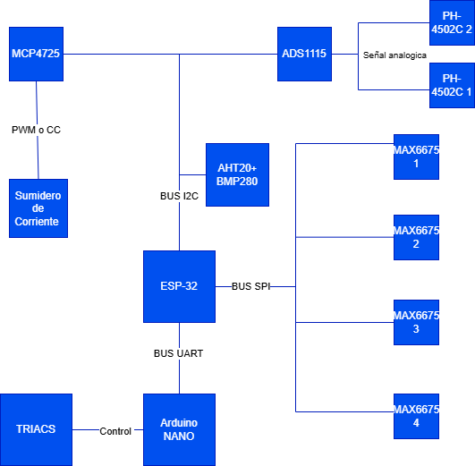
1.2 Guía Completa de Conexiones y Pinout Físico ("¿Qué va conectado a qué?")
Para facilitar el ensamble, mantenimiento, diagnóstico y reproducción del equipo sin ambigüedades, a continuación se detalla la distribución exacta de pines, bornes, clemas de tornillos y señales entre todos los módulos del sistema.
1.2.1 Cascada de Regulación y Rieles de Tensión
| Riel / Etapa | Módulo Generador | Tensión Nominal | Pines de Origen | Destino Físico (Carga / Consumidores) |
|---|---|---|---|---|
| Potencia Primaria | Fuente Conmutada (SMPS) | +12.0 V DC (10A) |
Bornes V+ y V- |
• Entrada Vin+ / Vin- del Módulo Buck LM2596• Clema VDD de la placa casera VCSS (alimentación de celda y LM358N)
|
| Pre-Regulador Buck | Módulo LM2596 (150 kHz) | +6.80 V DC (Display) |
Bornes OUT+ y OUT- |
• Pin 1 (Input) del regulador lineal LM7805 (TO-220) • Pin 2 (GND) a masa común |
| Lógica / Analógico 5V | Regulador Lineal LM7805 | +5.0 V DC (Limpio) |
Pin 3 (Output) |
• Pin 5V de placa Arduino Nano• Terminal VCC del Módulo de 2 Relevadores 5V• Pines VCC de los 2 módulos de pH PH-4502C• Pin 3 (Input) del regulador LDO LM1117-3.3 (TO-220) |
| Lógica / Sensores 3.3V | Regulador Lineal LM1117-3.3 | +3.3 V DC |
Pin 2 (Output / Tab) |
• Pin 3V3 del ESP32-S3 DevKit• Terminales VDD de ADS1115 (0x48), MCP4725 (0x60), AHT20/BMP280• Terminales VCC de los 4 módulos termopar MAX6675 SPI
|
1.2.2 Placa Casera del Sumidero de Corriente (VCSS PCB DIY)
La placa casera del sumidero de corriente constante alberga el amplificador operacional dual LM358N, los 2 transistores MOSFET IRLZ44N y las 2 resistencias cerámicas de cemento de 10W (1.0 Ω). Cuenta con 3 pares de clemas de tornillo y 2 pines header macho organizados de la siguiente forma:
+---------------------------------------------------------------------------------------------------+ | PLACA CASERA DEL SUMIDERO VCSS (DISTRIBUCIÓN FÍSICA) | | | | [CLEMA 1: REFERENCIA GND] [CLEMA 2: CONTROL & POTENCIA] [CLEMA 3: SALIDAS CELDA] | | [ GND ] [ RefGND ] [ VREF ] [ VDD ] [ OUT+ ] [ OUT- ] | | | | | | | | | | GND Común GND de Señal VOUT analógica +12V SMPS Hacia COM Hacia COM | | del Sistema del MCP4725 del MCP4725 (Alim. LM358) Relé 1 Relé 2 | | | | CIRCUITO ACTIVO: OpAmp LM358N (VCC = +12V VDD) | | | | MOSFET Rama 1 (IRLZ44N) MOSFET Rama 2 (IRLZ44N) | | R_Shunt 1 (10W / 1.0 Ohm Blanca) R_Shunt 2 (10W / 1.0 Ohm Blanca) | | | | | | [ HEADER SH1 ] [ HEADER SH2 ] | | (Pin Macho) (Pin Macho) | | | | | | +-------------> Hacia ADS1115 Canal A2 <----------+ | | +-------------> Hacia ADS1115 Canal A3 <----------+ | | (Indiferente: Ambos miden caídas 0-3.53V de ramas balanceadas) | +---------------------------------------------------------------------------------------------------+
| Clema / Conector | Nombre del Borne | Tipo de Señal | Conectado Físicamente a | Función en el Circuito |
|---|---|---|---|---|
| Clema 1 (Par Izquierdo) | GND |
Masa Potencia | Barra de GND común (Negativo de 12V) | Retorno de potencia de los shunts hacia la fuente. |
RefGND |
Masa Señal | Pin GND del módulo DAC MCP4725 |
Tierra analógica de referencia limpia para evitar caídas de tensión parásitas en la lectura de consigna. | |
| Clema 2 (Par Central) | VREF |
Consigna Analógica | Pin VOUT del módulo DAC MCP4725 |
Tensión de referencia analógica (0.00 V a 3.53 V) que fija la corriente deseada (I = VREF × Gm). |
VDD |
Alimentación +12V | Línea positiva +12V de la fuente SMPS | Alimenta el riel de potencia de la celda y el pin V+ (Pin 8) del operacional LM358N para asegurar plena excursión de compuerta (Vgs ≈ 6–10 V). | |
| Clema 3 (Par Derecho) | OUT+ |
Positivo Celda (+12V) | Terminal COM del Relé 1 (Módulo de 2 Relés) |
Puenteado internamente al lado VDD (+12V). Conduce la corriente hacia el ánodo a través del contacto del relé. |
OUT- |
Retorno Celda (Sumidero) | Terminal COM del Relé 2 (Módulo de 2 Relés) |
Conectado a los Drains de los dos MOSFETs IRLZ44N en paralelo. Es el sumidero que regula la corriente de retorno catódica. | |
| Headers Macho (Sensado) | HEADER SH1 |
Caída de Tensión Shunt 1 | Canal A2 del ADC ADS1115 (Pin Macho/Cable Dupont) |
Tensión analógica Vs1 = I1 × 1.0 Ω. Rango 0 a 3.50 V para medición de corriente y carga en 16 bits. |
HEADER SH2 |
Caída de Tensión Shunt 2 | Canal A3 del ADC ADS1115 (Pin Macho/Cable Dupont) |
Tensión analógica Vs2 = I2 × 1.0 Ω. Permite auditar el balance térmico entre ambas ramas. |
1.2.3 Módulo de 2 Relevadores 5V (Aislamiento Galvánico Bipolar ZCS)
Para garantizar que la celda electroquímica no tenga bucles de corriente parásita ni degrade la lectura de pH, el módulo de 2 relevadores conmuta simultáneamente tanto el polo positivo como el polo negativo de la celda:
+---------------------------------------------------------------------------------------------------+ | MÓDULO DE 2 RELEVADORES 5V (AISLAMIENTO TOTAL BIPOLAR) | | | | Control Lógico (Pines de Entrada): | | • [ VCC ] ---> Conectado a +5.0V (Salida LM7805) | | • [ GND ] ---> Conectado a Masa Común (GND) | | • [ IN1 ] --+ | | +--> Puenteados juntos hacia el GPIO 20 del ESP32-S3 (Disparo ZCS Active-LOW) | | • [ IN2 ] --+ | | | | Contactos de Potencia: | | RELÉ 1 (Aislamiento Ánodo +12V): | | • [ COM 1 ] <--- Recibe cable OUT+ de la placa VCSS (+12V VDD) | | • [ NO 1 ] ---> Conecta al ÁNODO de la Celda Hull (o ánodo de electrodeposición) | | | | RELÉ 2 (Aislamiento Cátodo / Sumidero): | | • [ COM 2 ] <--- Recibe cable OUT- de la placa VCSS (Drains MOSFETs) | | • [ NO 2 ] ---> Conecta al CÁTODO / Probeta de ensayo en la Celda | | | | COMPORTAMIENTO METROLÓGICO: | | • Cuando GPIO 20 = LOW (Fuente Activa): Ambos relés cierran contactos NO; la celda energiza. | | • Cuando GPIO 20 = HIGH (Fuente Apagada o Muestreo pH): Ambos relés se abren; la cuba química | | queda 100% flotante, permitiendo lecturas estables del electrodo de vidrio sin corrientes. | +---------------------------------------------------------------------------------------------------+
1.2.4 Pinout Completo del Nodo Maestro ESP32-S3 (N16R8)
| Pin ESP32-S3 | Nombre Señal | Nivel Lógico | Módulo / Dispositivo de Destino | Descripción y Función |
|---|---|---|---|---|
3V3 |
VCC Lógica | +3.3 V DC | Salida del regulador LM1117-3.3 (TO-220) | Alimentación del microcontrolador y sensores de 3.3V. |
GND |
Masa Común | 0 V | Barra de GND en estrella | Retorno común de lógica y comunicación. |
GPIO 8 |
I2C SDA | 3.3V TTL | Pines SDA de ADS1115, MCP4725, AHT20, BMP280 | Bus de datos serie I2C Fast-Mode (400 kHz). Pull-ups internos y en módulos. |
GPIO 9 |
I2C SCL | 3.3V TTL | Pines SCL de ADS1115, MCP4725, AHT20, BMP280 | Línea de reloj serie I2C (400 kHz). |
GPIO 18 |
SPI SCK | 3.3V TTL | Pines SCK de los 4 módulos MAX6675 | Reloj SPI compartido para digitalización de termopares. |
GPIO 19 |
SPI MISO (SO) | 3.3V TTL | Pines SO de los 4 módulos MAX6675 | Datos SPI recibidos desde los termopares hacia el ESP32 (Half-Duplex). |
GPIO 5 |
CS Tina 1 | 3.3V TTL | Pin CS del MAX6675 Tina 1 (Desengrase Alcalino) | Chip Select activo en nivel BAJO para lectura de Tina 1. |
GPIO 4 |
CS Tina 2 | 3.3V TTL | Pin CS del MAX6675 Tina 2 (Decapado Alcalino) | Chip Select activo en nivel BAJO para lectura de Tina 2. |
GPIO 13 |
CS Tina 3 | 3.3V TTL | Pin CS del MAX6675 Tina 3 (Zincado Celda Hull) | Chip Select activo en nivel BAJO para lectura de Tina 3. |
GPIO 14 |
CS Tina 4 | 3.3V TTL | Pin CS del MAX6675 Tina 4 (Niquelado sobre Zinc) | Chip Select activo en nivel BAJO para lectura de Tina 4. |
GPIO 17 |
UART2 TX | 3.3V TTL | Pin RX (D0) del Arduino Nano |
Transmisión asíncrona a 9600 bps de las tramas de potencia para los TRIACs. |
GPIO 20 |
Disparo ZCS Relé | 3.3V TTL | Entradas puenteadas IN1 e IN2 del Módulo de Relés |
Control de aislamiento galvánico de la celda (Active-LOW: 0V conecta, 3.3V aísla). |
GPIO 48 |
WS2812 DIN | 3.3V TTL | Baliza LED RGB Neopixel industrial | Secuencia de datos unidireccional para los 13 códigos de estado lumínico. |
1.2.5 Pinout del Nodo Esclavo Arduino Nano (Control AC de Calefacción)
| Pin Arduino Nano | Función de Firmware | Módulo / Dispositivo Conectado | Descripción Operativa |
|---|---|---|---|
5V |
Alimentación | Salida +5.0V del regulador LM7805 | Alimentación del microcontrolador ATmega328P @ 16 MHz. |
GND |
Masa | Barra de GND común | Referencia de potencial común con el ESP32. |
Pin D0 (RX) |
UART RX Hardware | Pin GPIO 17 del ESP32-S3 |
Recepción de tramas CSV de consignas de potencia térmica (9600 baud). |
Pin D3 (INT1) |
Cruce por Cero (ZC) | Salida del optoacoplador 4N35 de placa MDAC4C | Interrupción externa por flanco de bajada al ocurrir el cruce por cero de la red AC 60 Hz. |
Pin D7 |
Gate Tina 1 | Opto-TRIAC 1 (MOC3021) / Calefactor 450W Tina 1 | Pulso de 80 μs de disparo por ángulo de fase para Tina 1 (Desengrase). |
Pin D8 |
Gate Tina 2 | Opto-TRIAC 2 (MOC3021) / Calefactor 450W Tina 2 | Pulso de 80 μs de disparo por ángulo de fase para Tina 2 (Decapado). |
Pin D9 |
Gate Tina 3 | Opto-TRIAC 3 (MOC3021) / Calefactor 18W Tina 3 | Pulso de 80 μs de disparo por ángulo de fase para Tina 3 (Celda Hull). |
Pin D10 |
Gate Tina 4 | Opto-TRIAC 4 (MOC3021) / Calefactor 450W Tina 4 | Pulso de 80 μs de disparo por ángulo de fase para Tina 4 (Niquelado). |
1.2.6 Mapa de Canales del Convertidor ADC ADS1115 (16 Bits - Dirección 0x48)
| Canal ADS1115 | Variable Sensada | Módulo / Origen Físico | Rango Típico de Tensión | Conversión a Variable Física |
|---|---|---|---|---|
Canal A0 |
Desacoplado / Erradicado (RTOS 2.0) | Sin conexión física (Eliminado) | 0.00 V (Flotante protegido) | Erradicado en RTOS 2.0 para suprimir diafonía e inyección de carga multiplexada. |
Canal A1 |
Sonda de pH Dedicada (Exclusiva) | Pin Po del módulo PH-4502C |
1.00 V a 3.00 V (Offset ~1.765 V) | pH = 7.0 − (V − Voffset) / S(T) a 860 SPS continuo (perfiles NVS por modo). |
Canal A2 |
Corriente Rama Shunt 1 (I1) | HEADER SH1 de la placa casera VCSS |
0.00 V a 3.50 V (1.0 V/A) | I1 = Vs1 / 1.0 Ω |
Canal A3 |
Corriente Rama Shunt 2 (I2) | HEADER SH2 de la placa casera VCSS |
0.00 V a 3.50 V (1.0 V/A) | I2 = Vs2 / 1.0 Ω → Itotal = I1 + I2 |
⚠️ 1.3 Límites de Diseño, Advertencias Críticas & Disclaimers Operativos
Para garantizar la seguridad del operador, la integridad de los componentes semiconductores y la validez metrológica de los resultados experimentales, es indispensable conocer las fronteras físicas y operativas de la estación. Este equipo fue concebido como un banco experimental especializado de laboratorio; por ende, presenta los siguientes límites de diseño que deben considerarse al planificar cualquier nuevo ensayo:
1. Tensión de Cumplimiento (Cargas Óhmicas Grandes)
Límite Eléctrico
Límite: La fuente de potencia entrega +12.0 V DC. Tras descontar la caída en el MOSFET en saturación, los shunts cerámicos y el cableado, el margen de cumplimiento útil sobre la celda es de aproximadamente 10.5 V.
Consecuencia: Si la cuba presenta una resistencia óhmica alta (Rcelda > 3.5 Ω) por electrolitos muy diluidos, probetas pequeñas o distancia interelectródica excesiva, la fuente no podrá entregar corrientes elevadas. A 5.0 Ω, la corriente máxima física será de ~2.1 A, provocando que el DAC sature a 4095 y el firmware dispare la alarma FALLA_SATURACION.
Solución Operativa: Incrementar la conductividad del baño (sales soporte como Na2SO4), acercar los electrodos, o bien elevar la tensión de la fuente externa (ej. 18V a 24V, vigilando el límite Vds = 55V del IRLZ44N y la disipación térmica).
2. Medición de pH: Muestreo Puntual (No Inmersión Continua)
Límite Químico
Límite: La sonda de pH combinada de electrodo de vidrio con referencia de plata/cloruro de plata (Ag/AgCl) está diseñada para mediciones en reposo o agitación moderada.
Consecuencia de Inmersión Continua:
• Envenenamiento de Unión Líquida: La migración de iones metálicos pesados (Zn2+, Ni2+) penetra el diafragma cerámico poroso y contamina el electrolito interno de KCl 3M, degradando irreversiblemente la pendiente de Nernst.
• Ataque Térmico/Cáustico: En tinas a 80–95 °C de desengrase y decapado alcalino, la membrana de vidrio sufre ataque cáustico acelerado por iones Na+ y OH−.
Procedimiento Obligatorio: La medición de pH debe realizarse como muestreo puntual intermitente (antes de encender la celda, al finalizar el ensayo o tomando alícuotas enfriadas a 25 °C).
3. Rangos Térmicos Seguros e Interlocks
Límite Térmico
Límite: Aunque los termopares K leen de 0 a 1024 °C, el firmware del supervisor FreeRTOS impone ventanas térmicas de seguridad para reactores químicos:
• Rango Seguro de Operación: 15.0 °C a 95.0 °C.
• Alarma Desconexión (T < 5.0 °C o D2=1): Apaga el TRIAC por detección de cable abierto.
• Alarma Inercia (T > SP + 5.0 °C): Suspende el calentamiento para evitar rebasamiento térmico.
• Parada de Emergencia Absoluta (T > 105.0 °C): Corte total Fail-Safe para evitar ebullición del electrolito y deformación plástica de cubas de polipropileno/acrílico.
Junta Fría del Gabinete: Si el interior del gabinete hermético supera 50 °C por disipación de potencia, el sensor de unión fría del MAX6675 introduce deriva de ±2 °C.
4. Limitaciones de Frecuencia de Conmutación VCSS
Límite Dinámico
Límite: La velocidad de modulación de corriente está limitada por el bus I2C (MCP4725 a 400 kHz, ~0.8 ms por escritura), el ancho de banda del LM358N (Slew Rate 0.5 V/μs) y la capacitancia parásita de compuerta Ciss del MOSFET (1700 pF).
• Rango Óptimo en Lazo Cerrado: 1.0 Hz a 10.0 Hz.
• Rango Máximo (Muestreo Estroboscópico ETS): Hasta 50–100 Hz con pulso mínimo Ton ≥ 5 ms.
Disclaimer: La estación no es un generador de pulsos de alta frecuencia (kHz o MHz). No es adecuada para ensayos de nano-pulse plating de microsegundos, sino para pulsos de relajación de doble capa electroquímica.
5. Topología Unipolar (Ausencia de Voltajes Negativos)
Límite Topológico
Límite: La etapa de potencia VCSS es un sumidero low-side con MOSFETs canal N referenciados a tierra a través de shunts. La corriente fluye en un solo sentido: desde el ánodo (+12V) hacia el cátodo (Drain) y de ahí a GND.
Restricción: No es un potenciostato/galvanostato bipolar de 4 cuadrantes. No puede invertir la polaridad para aplicar voltajes negativos ni pulsos catódicos/anódicos combinados (PRC - Periodic Reverse Current).
Solución para Inversión: Para despasivación anódica activa in-situ o limpieza por polaridad inversa, se requiere conmutación mediante un contactor/relé inversor bipolar externo o una etapa de potencia complementaria en puente H.
6. Capacidad de 7 A vs. Disipación Térmica (Límite Seguro)
Límite de Potencia
Capacidad Teórica: El hardware dispone de 2 ramas MOSFET en paralelo (3.5 A por rama), lo que teóricamente permite alcanzar hasta 7.0 A pico.
Estrés Térmico a 7.0 A Continuos:
• A 3.5 A por rama, la disipación en cada resistencia cerámica de 1.0 Ω es P = (3.5)2 × 1.0 = 12.25 W, rebasando su potencia nominal de 10W.
• En los transistores IRLZ44N, si la caída Vds es de 1.5V a 3.5A, cada MOSFET disipa 5.25 W, requiriendo disipadores voluminosos y flujo de aire forzado.
Recomendación Crítica de Ingeniería:
• Operación continua segura recomendada: hasta 3.0–3.5 A totales (1.5–1.75 A por rama).
• Para experimentos que demanden de forma sostenida entre 5.0 A y 7.0 A, no se deben forzar las 2 ramas actuales. La solución técnica correcta es añadir más ramas VCSS en paralelo (ej. 4 ramas de 1.5 A), dividiendo la corriente y disipación entre más componentes.
7. Disclaimer: Gráficas de Carácter Demostrativo
Nota Demostrativa
Carácter Ilustrativo: Todas las gráficas, perfiles térmicos, oscilogramas de actuadores, retratos de fase y registros de telemetría incluidos a lo largo de este manual son estrictamente demostrativos e ilustrativos.
Alcance: Fueron generadas como bancos sintéticos o corridas de prueba para validar los motores de renderizado vectorial a 300 DPI (telemetria/graficar_datos.py y Tkinter) y modelar didácticamente los fenómenos del sistema (calentamiento, frenado PI, conmutación ZCS y balances de corriente). No representan ni corresponden a ningún proceso químico, lote industrial ni ensayo experimental real en particular.
Operación Real: Para cada corrida experimental auténtica en el laboratorio, las figuras definitivas de certificación deben generarse a partir de los datos CSV capturados en tiempo real por el equipo.
| Parámetro / Subsistema | Límite Máximo del Hardware | Punto de Operación Seguro Recomendado | Riesgo por Exceder el Límite | Medida Correctiva de Diseño |
|---|---|---|---|---|
| Tensión de Cumplimiento VCSS | 10.5 V útiles (sobre riel de 12V) | Rcelda ≤ 3.0 Ω para 3.0 A | Saturación del sumidero (I cae a 0 o no alcanza consigna) | Aumentar sales soporte o elevar fuente a 18V–24V. |
| Corriente Continua VCSS (2 ramas) | 7.0 A pico (3.5 A por rama) | ≤ 3.5 A continuos (1.75 A por rama) | Sobrecalentamiento de shunts 10W (> 12.25W) y deriva de lectura | Añadir más ramas VCSS en paralelo para repartir potencia. |
| Frecuencia de Pulsado | 100 Hz (Muestreo ETS estroboscópico) | 1.0 Hz a 10.0 Hz | Distorsión de onda cuadrada por latencia I2C y capacitancia Ciss | Operar en frecuencias de relajación (≤ 10 Hz). |
| Polaridad de Salida | Unipolar (1 solo cuadrante) | Solo corriente catódica directa | Imposibilidad de generar voltajes negativos | Instalar relé inversor bipolar externo o puente H. |
| Rango Térmico de Tinas | 0.0 °C a 1024.0 °C (MAX6675) | 15.0 °C a 95.0 °C | Ebullición del electrolito o daño en tinas plásticas (> 105 °C) | Interlocks automáticos por software en 95 °C y 105 °C. |
| Medición de pH | Inmersión puntual en reposo | Muestreo intermitente / alícuotas | Envenenamiento irreversible de unión Ag/AgCl y ataque cáustico | No dejar electrodo sumergido durante electrólisis continua. |
| Gráficas y Registros del Manual | Figuras sintéticas / validación de software | Uso didáctico y demostrativo | Asumir erróneamente que son datos de un lote real particular | Generar gráficas propias desde el CSV con telemetria/graficar_datos.py. |
🌐 2. Interfaz Web Embebida del ESP32 (http://192.168.4.1 o http://interfaz.local)
Además del software SCADA de escritorio para PC, el microcontrolador maestro ESP32-S3 ejecuta un servidor web HTTP autónomo en el puerto 80 (Core 0 - Task_Web). Esta interfaz está construida con arquitectura moderna (HTML5, Vanilla CSS responsivo y JavaScript asíncrono) almacenada de forma permanente en la memoria Flash (PROGMEM) del ESP32. Permite el control total de la planta, ajuste de temperaturas, gobierno de corriente VCSS, calibración metrológica de pH e inspección de logs desde cualquier teléfono inteligente, tablet o laptop sin instalar ningún software ni driver.
Uli | Contraseña: 12345678.2. Abrir Navegador: Abra cualquier navegador (Chrome, Safari, Firefox, Edge) e ingrese la IP:
http://192.168.4.1 o la dirección mDNS: http://interfaz.local.3. Exploración sin Hardware (Simulador Local): Para explorar e interactuar con las 7 vistas web sin encender el equipo físico, abra la réplica interactiva: 🌐 Abrir Vista Previa Web Local (RTOS 1.3).
2.1 Pantalla Principal / Hub de Control (/ o /index.html)
Es el centro neurálgico móvil. Proporciona una visión instantánea de la meteorología ambiental de cabina, el latido FreeRTOS en tiempo real, avisos de seguridad FailSafe y accesos directos a todos los módulos instrumentales con telemetría viva.
| Elemento / Control | Tipo de Control | Función en la Interfaz | Efecto Físico en el ESP32 / Sensores |
|---|---|---|---|
Badge de Estado (sys-badge) |
Indicador dinámico | Muestra FreeRTOS SMP con pulso verde animado si hay enlace continuo con el microcontrolador. Cambia a rojo si el ESP32 no responde en 3 segundos. |
Supervisa la tarea Task_Web en Core 0. Si el watchdog de FreeRTOS detecta bloqueo, el indicador conmuta a Offline. |
Chip Tag (chip-tag) |
Etiqueta estática | Identifica el hardware montado: ESP32-S3 Dual-Core N16R8 (16 MB Flash Quad-SPI, 8 MB Octal-PSRAM). |
Garantiza al operador que se está comunicando con el procesador maestro del equipo. |
Banner Fail-Safe (failsafe-banner) |
Banner de Alarma Crítica | Permanece oculto en operación normal. Si ocurre un fallo térmico o de corriente, aparece con animación de vibración roja indicando la causa exacta. | Contiene el botón DESBLOQUEAR SISTEMA, que envía un POST /api/failsafe_reset para rehabilitar el bus I2C y compuertas de potencia tras resolver la causa. |
Estación Ambiental (env-box) |
3 Displays numéricos | Muestra Temp. Amb. (°C), Humedad (% HR) y Presión (hPa). Se iluminan en color azul cian con efecto de flash cada vez que se actualiza una muestra. | Lee directamente los sensores I2C de cabina: termo-higrómetro AHT20 (dirección 0x38) y barómetro digital BMP280 (dirección 0x76). |
| Tarjeta Salida de Corriente | Botón de navegación | Muestra la corriente entregada viva (ej. 2.40 A DC o cadencia pulsada) y da acceso a la vista de la fuente. |
Navega a /fuente para manipulación de consigna del MCP4725 y sumidero VCSS. |
| Tarjeta Control Térmico | Botón de navegación | Muestra cuántas tinas tienen calentamiento activo (ej. 2/4 tinas activas). |
Navega a /termico para ajustar setpoints individuales de los 4 canales PI. |
| Tarjeta Módulo de pH | Botón de navegación | Muestra el valor de pH actual de Tina 1 y Tina 2 (ej. Zinc: 7.05 · Ni: 4.12). |
Navega a /ph para visualización de diales cromáticos y calibración con soluciones buffer. |
| Accesos a Herramientas | Botonera secundaria | Enlaces rápidos hacia Estado de Sensores, Consola de Diagnóstico y Actualizar Firmware (OTA). |
Permite mantenimiento avanzado del hardware sin necesidad de abrir el monitor SCADA en la PC. |
2.2 Control Térmico Web de 4 Canales (/termico)
Permite regular la temperatura de los 4 baños químicos de manera independiente o conjunta. El operador puede modificar las temperaturas deseadas acercando su celular a las cubas y observando la respuesta en tiempo real.
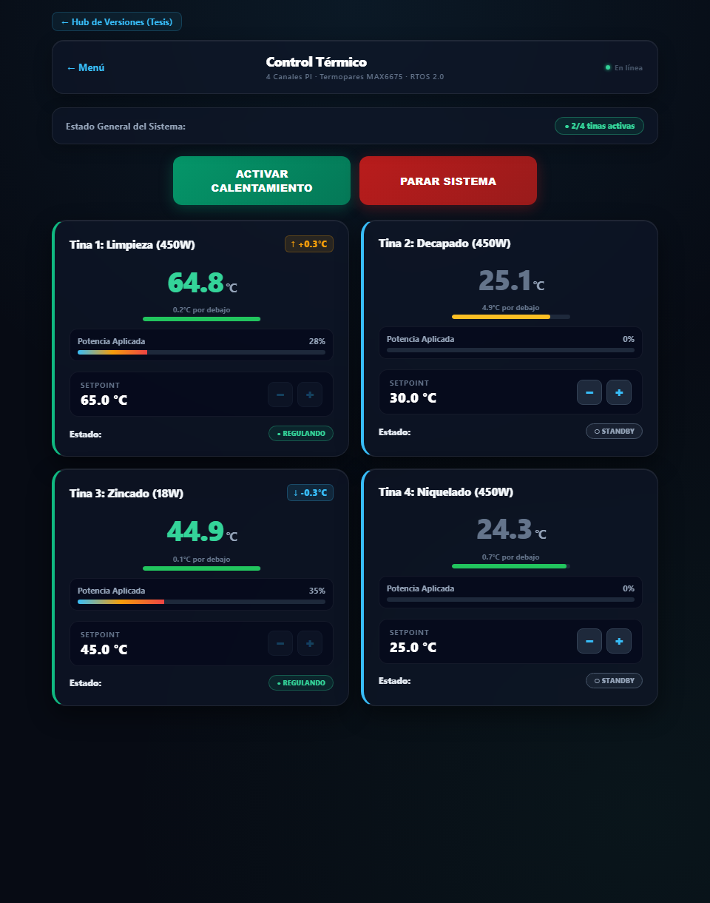
| Control Interactivo | Tipo | Función al Pulsar | Efecto en el Hardware / Algoritmo PI |
|---|---|---|---|
| ACTIVAR CALENTAMIENTO | Botón maestro verde | Inicia el lazo de control PI en todos los canales térmicos configurados. | Habilita el disparo de los 4 opto-TRIACs MOC3021 en sincronía con el cruce por cero (ZCS) de la red AC 60 Hz. |
| PARAR SISTEMA | Botón maestro rojo | Suspende inmediatamente la entrega de potencia en todas las tinas. | Fuerza el ángulo de disparo α = 180° (apagado total) y reinicia el acumulador integral del PID para prevenir sobrepicos de temperatura al reanudar. |
| + / - (Paso a Paso) | Botones de setpoint | Aumenta o disminuye la temperatura deseada de la tina seleccionada en incrementos de 1 °C por pulsación. | Actualiza la variable de consigna SPi en la memoria del ESP32 y envía la nueva referencia al cálculo de error e(t) = SPi − PVi. |
| Dígitos Gigantes (54px) | Display numérico | Muestra la temperatura actual leída en la tina con resolución de 0.1 °C. | Proviene de la lectura digital del termopar tipo K a través del convertidor SPI MAX6675 (actualizado cada 250 ms). |
Flecha de Tendencia (trend) |
Badge con flecha | Indica si la temperatura está SUBIENDO (naranja), BAJANDO (azul) o ESTABLE (verde, variación menor a 0.2 °C/min). |
Cálculo de derivada temporal discreta dT/dt ejecutado por el ESP32 para dar retroalimentación intuitiva al operario. |
| Barra de Potencia TRIAC | Barra de gradiente | Muestra el porcentaje instantáneo de potencia aplicada al calefactor (0% a 100%). | Refleja el tiempo de conducción del TRIAC dentro de cada semiciclo de 8.33 ms (60 Hz AC). |
| Píldora de Estado | Badge de tina | Indica si la tina está ACTIVA, EN ESPERA o ERROR SENSOR si el termopar se rompe o desconecta. |
Si detecta circuito abierto en el MAX6675 (bit D2 en alto), desactiva de inmediato el TRIAC de esa tina por seguridad intrínseca. |
2.3 Salida de Corriente VCSS & Control de Celda (/fuente)
Controla el generador y sumidero de corriente constante para electrodeposición, pasivado o ensayos de recubrimiento. Permite conmutar entre modo continuo (DC) y modo pulsado (1 a 100 Hz), regular la corriente mediante sliders táctiles o presets y supervisar en vivo la celda electroquímica con aislamiento por relé en conmutación a corriente cero (ZCS).
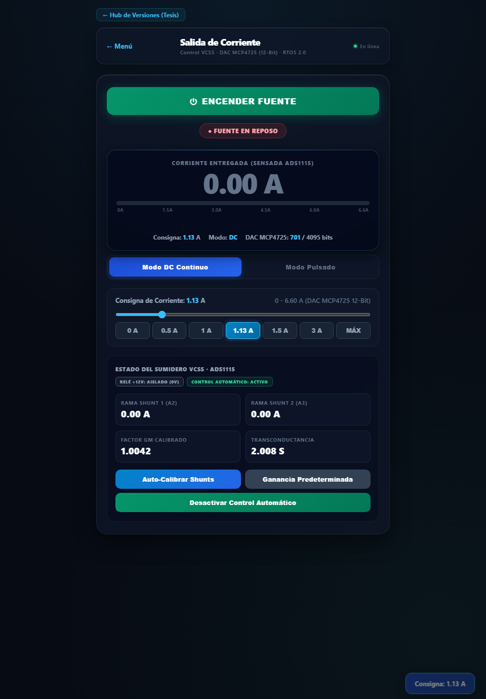
| Control Interactivo | Rango / Opciones | Función Operativa | Efecto en el Circuito Electrónico VCSS |
|---|---|---|---|
| ENCENDER FUENTE / APAGAR FUENTE | Biestable (Verde / Rojo) | Activa o desactiva la entrega de corriente hacia la celda electroquímica. | Dispara el optoacoplador PC817 del relé de aislamiento físico de +12V y conmuta el DAC MCP4725 de 0V a la tensión de consigna. |
| Amperímetro Display Gigante | 0.00 a 6.60 A | Muestra la corriente real que fluye por la celda con dos decimales de precisión. | Adquirida por el ADC ADS1115 de 16 bits en los canales A2 y A3 midiendo la caída en las resistencias de shunt cerámicas de 10W. |
| Barra VU-Meter Analógica | 0 a 6.60 A (Graduada) | Representación analógica intuitiva de la corriente para evaluar el nivel de carga a distancia. | Barra de llenado dinámico con código de colores según la intensidad consumida. |
| Selector de Modo | Modo DC Continuo / Modo Pulsado |
Conmuta la topología de conducción eléctrica del sumidero. | En modo DC, el DAC entrega una tensión analógica estable; en modo pulsado, el ESP32 modula la polarización de compuerta a frecuencia y ciclo de trabajo programables. |
| Slider Consigna de Corriente | 0 a 4095 bits (0.00 a 6.60 A) | Ajusta gradualmente la corriente deseada arrastrando el control con el dedo. | Escribe en el registro del DAC MCP4725 vía I2C (dirección 0x60), ajustando la tensión de referencia aplicada a los operacionales LM358. |
| Presets Rápidos | 0.5 A, 1.5 A, 3.0 A, 5.0 A | Salta directamente a valores estándar de ensayo con un solo toque. | Calcula la palabra binaria del DAC y la transmite de inmediato sin demoras de arrastre. |
| Slider Frecuencia Pulsada | 1 a 100 Hz | Define la frecuencia de conmutación de la onda cuadrada en modo pulsado. | Ajusta el temporizador de hardware del ESP32 que gobierna la conmutación de los transistores MOSFET. |
| Slider Ciclo de Trabajo (Duty) | 10% a 90% | Regula el porcentaje de tiempo activo (Ton / T) del pulso catódico. | Permite controlar el crecimiento cristalográfico y refinamiento de grano en recubrimientos metálicos. |
| Auto-Calibrar Shunts | Botón de acción | Ejecuta la calibración en vacío del circuito de corriente. | Pone el DAC a 0V, mide las tensiones de desbalance en los shunts cerámicos y almacena el factor de corrección Gm en la Flash NVS del ESP32. |
El microcontrolador ESP32 ejecuta la adquisición estroboscópica (ETS) internamente a nivel de firmware en el Core 1 (
Task_Fuente.cpp)
para calcular en tiempo real el diagnóstico de impedancia y salud de la celda (CELDA_OK o CELDA_SATURADA) sin saturar el bus I2C.
Para mantener el servidor web móvil ultraligero y con latencia cero en celulares o tablets, la visualización osciloscópica y reconstrucción
gráfica de la onda cuadrada se realiza en la aplicación SCADA de escritorio y en la Suite Científica a 300 DPI
(Figura 11.9).
2.4 Módulo de pH Dual & Calibración / Offset Hardware (/ph)
Supervisa los sensores de pH de los baños químicos críticos (ej. Tina 1 y Tina 2). Incluye un asistente de calibración guiada con soluciones buffer estándar y un voltímetro de ajuste fino para el circuito preamplificador analógico.
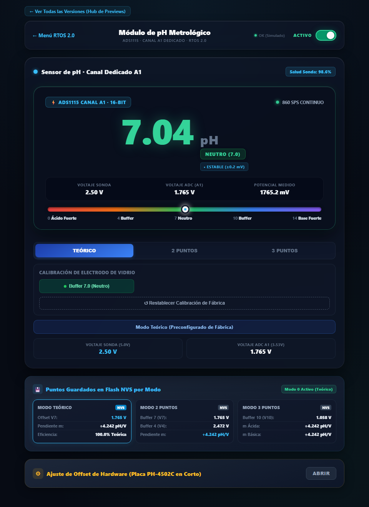
| Elemento Web | Opciones / Valores | Propósito Operativo | Impacto Técnico en el Sistema |
|---|---|---|---|
Interruptor Maestro (tog) |
LECTURA ACTIVA / SUSPENDIDO |
Habilita o pausa la adquisición continua del sensor de pH. | Activa o apaga la tarea de conversión del ADC ADS1115 (Canal A1 dedicado), ahorrando ancho de banda en el bus I2C cuando no se use pH. |
| Dial Cromático Circular | Escala 0.00 a 14.00 pH | Muestra el pH con color dinámico: rojo (<3 ácido fuerte), naranja (3-6), verde (6-8 neutro), azul (8-11) y púrpura (>11 alcalino). | Calculado mediante la ecuación de Nernst con compensación por temperatura de la tina: pH = 7.0 − (V − V0) / S(T). |
| Selector de Calibración | Teórico (Nernst) / 2 Puntos (7 & 4) / 3 Puntos (7, 4 & 10) |
Elige el modelo matemático de calibración electroquímica. | El modo 2 puntos ajusta el offset en pH 7 y la pendiente ácida con pH 4; el modo 3 puntos ajusta pendientes asimétricas para rango ácido y básico. |
| Calibrar con Buffer 7.00 | Solución neutra verde | Punto cero del electrodo de vidrio. | Abre una ventana modal con cuenta regresiva de 10 segundos donde el ESP32 verifica estabilidad (|dV/dt| < 10 mV) antes de fijar Voffset. |
| Calibrar con Buffer 4.01 | Solución ácida roja | Calibra la pendiente ácida del electrodo. | Calcula la pendiente real S = (V7 − V4) / (7.00 − 4.01) en mV/pH y verifica que esté entre el 90% y 105% del valor teórico de Nernst. |
| Calibrar con Buffer 10.01 | Solución básica azul | Calibra la pendiente alcalina del electrodo. | Permite compensar el error de ion alcalino (error de sodio) en soluciones altamente básicas. |
| Restaurar Fábrica | Botón de reset | Borra la calibración de la memoria Flash NVS y vuelve a 59.16 mV/pH a 25 °C. | Útil cuando se conecta un electrodo nuevo y se desconoce la calibración anterior. |
| Ajuste Fino de Offset Hardware | Panel desplegable | Voltímetro con aguja indicadora respecto a la tierra virtual de 1.765 V (Vref/2). | Permite al operador girar el trimpot multivuelta del módulo LM358 con un desarmador plano hasta que la aguja quede en el centro de la zona verde (±15 mV). |
2.5 Diagnóstico de Sensores & Leyenda Neopixel de 13 Códigos (/sensores)
Audita los 8 dispositivos periféricos conectados a los buses digitales I2C y SPI. Además, contiene la referencia visual completa de los 13 códigos de colores y cadencias del LED Neopixel RGB del panel de control.
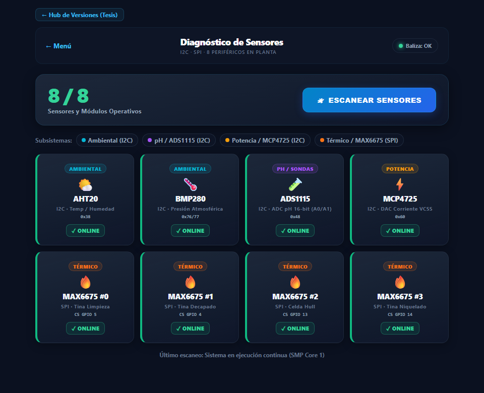
| Periférico Sensado | Bus / Pines | Dirección / CS | Estado Esperado | Función en el Sistema |
|---|---|---|---|---|
| BMP280 | I2C (SDA 21, SCL 22) | 0x76 |
OK | Presión barométrica atmosférica y temperatura de referencia del gabinete. |
| AHT20 | I2C (SDA 21, SCL 22) | 0x38 |
OK | Humedad relativa del aire (%) para monitoreo ambiental y punto de rocío en cabina. |
| ADS1115 | I2C (SDA 21, SCL 22) | 0x48 |
OK | Conversor ADC de 16 bits: Canal A1 dedicado a pH (Po) y corriente en shunts VCSS (A2/A3). |
| MCP4725 | I2C (SDA 21, SCL 22) | 0x60 |
OK | Conversor DAC de 12 bits: fija la tensión de referencia del sumidero de corriente. |
| MAX6675 Tina 1 | SPI (SCK 18, MISO 19) | CS GPIO 15 | OK | Digitalizador de termopar tipo K para Tina 1 (0 a 1024 °C, resolución 0.25 °C). |
| MAX6675 Tina 2 | SPI (SCK 18, MISO 19) | CS GPIO 2 | OK | Digitalizador de termopar tipo K para Tina 2. |
| MAX6675 Tina 3 | SPI (SCK 18, MISO 19) | CS GPIO 0 | OK | Digitalizador de termopar tipo K para Tina 3. |
| MAX6675 Tina 4 | SPI (SCK 18, MISO 19) | CS GPIO 4 | OK | Digitalizador de termopar tipo K para Tina 4. |
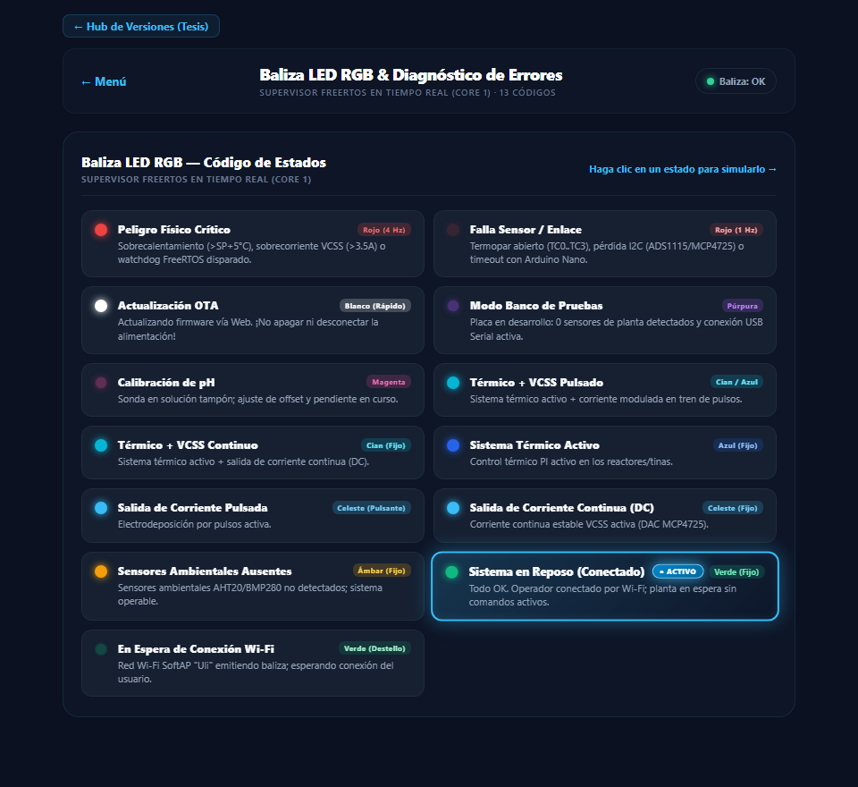
Guía de los 13 Códigos Lumínicos del LED Neopixel (RGB WS2812):
1. Peligro Físico Crítico (Rojo 4 Hz): Sobrecalentamiento (>SP+5°C), sobrecorriente VCSS (>3.5A) o watchdog FreeRTOS disparado.
2. Falla Sensor / Enlace (Rojo 1 Hz): Termopar abierto (TC0..TC3), pérdida I2C (ADS1115/MCP4725) o timeout con Arduino Nano.
3. Actualización OTA (Blanco Rápido): Actualizando firmware vía Web. ¡No apagar ni desconectar la alimentación!
4. Modo Banco de Pruebas (Púrpura): Placa en desarrollo: 0 sensores de planta detectados y conexión USB Serial activa.
5. Calibración de pH (Magenta): Sonda en solución tampón; ajuste de offset y pendiente en curso.
6. Térmico + VCSS Pulsado (Cian / Azul): Sistema térmico activo + corriente modulada en tren de pulsos.
7. Térmico + VCSS Continuo (Cian Fijo): Sistema térmico activo + salida de corriente continua (DC).
8. Sistema Térmico Activo (Azul Fijo): Control térmico PI activo en los reactores/tinas.
9. Salida de Corriente Pulsada (Celeste Pulsante): Electrodeposición por pulsos activa.
10. Salida de Corriente Continua (Celeste Fijo): Corriente continua estable VCSS activa (DAC MCP4725).
11. Sensores Ambientales Ausentes (Ámbar Fijo): Sensores ambientales AHT20/BMP280 no detectados; sistema operable.
12. Sistema en Reposo (Verde Fijo): Todo OK. Operador conectado por Wi-Fi; planta en espera sin comandos activos.
13. En Espera de Conexión Wi-Fi (Verde Destello): Red Wi-Fi SoftAP "Uli" emitiendo baliza; esperando conexión del usuario.
2.6 Consola Web Serial & Logs FreeRTOS (/consola)
Permite a los operadores e ingenieros inspeccionar los mensajes internos del sistema operativo FreeRTOS en tiempo real desde el navegador, sin necesidad de conectar el microcontrolador a la computadora con un cable USB.
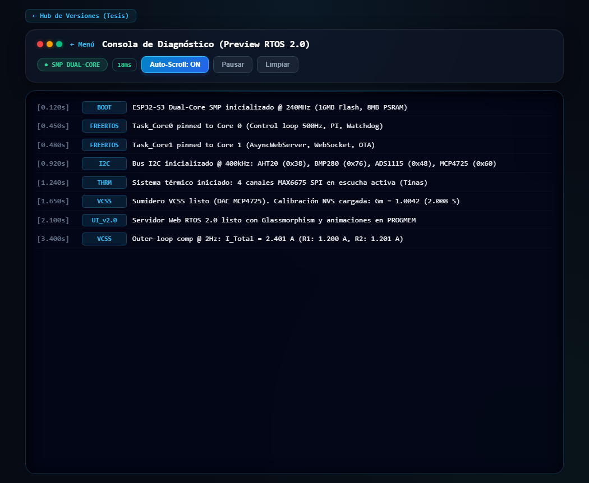
| Elemento / Botón | Función | Comportamiento en el Navegador |
|---|---|---|
| Auto-Scroll: ON/OFF | Control de desplazamiento | Mantiene la ventana al final del registro al llegar nuevas líneas. Al desactivarse, permite leer líneas antiguas sin que la pantalla salte. |
| Pausar / Reanudar | Control de flujo | Detiene temporalmente la adición de nuevas líneas en la vista sin perder los registros en el buffer del microcontrolador. |
| Limpiar | Borrado de terminal | Vacía la ventana del terminal para iniciar una inspección limpia de un evento específico. |
| Indicador de Latencia | Telemetría de enlace | Muestra el tiempo de ida y vuelta HTTP en milisegundos (típicamente entre 12 y 25 ms sobre la red SoftAP Uli). |
| Etiquetas de Subsistema | Filtro contextual | Clasifica los eventos por origen: [BOOT], [FREERTOS], [I2C], [THRM], [VCSS], [PH], [AMB], [OTA]. |
2.7 Portal OTA de Actualización Inalámbrica de Firmware (/update)
Permite actualizar el firmware del microcontrolador sin abrir el gabinete ni desconectar sensores. Utiliza el esquema de particiones duales de FreeRTOS para garantizar que si la carga falla o se interrumpe, el equipo regresa intacto al firmware anterior.
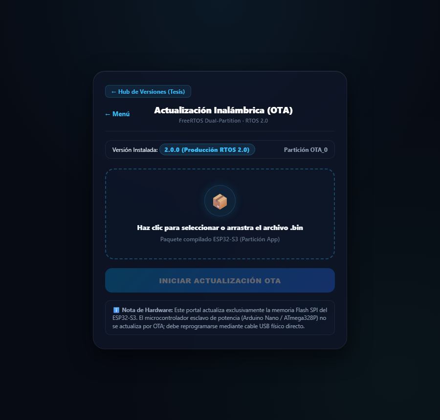
.bin.2. Ingrese a
http://192.168.4.1/update desde cualquier dispositivo conectado a la red Uli.3. Arrastre el archivo
.bin a la zona punteada o haga clic en ella para seleccionarlo.4. Presione el botón INICIAR ACTUALIZACIÓN OTA. Espere a que la barra complete el 100%. El ESP32 verificará el checksum y se reiniciará automáticamente en 5 segundos.
🛑 IMPORTANTE: El Arduino Nano (Nodo Dimmer AC) NO se actualiza vía OTA
El portal web /update flashea de forma inalámbrica únicamente la memoria Flash SPI del microcontrolador maestro ESP32-S3.
El microcontrolador esclavo Arduino Nano (ATmega328P) no posee tarjeta de red Wi-Fi ni líneas de control de reset/DTR enlazadas al ESP32 (se encuentra aislado galvánicamente y comunicado exclusivamente por el enlace serie UART2 en modo esclavo).
⚡ Procedimiento de Actualización del Arduino Nano (Vía Cable USB Físico):
- ⚠️ SEGURIDAD CRÍTICA: Desconecte la clavija principal de corriente alterna (110V/220V AC) del gabinete antes de conectar cualquier cable a la computadora para garantizar el aislamiento físico del operador y de la PC.
- Conecte el Arduino Nano a su computadora mediante un cable USB (Mini-B o Type-C según la versión de su placa Nano).
- Abra el código fuente
arduino_nano/nano/nano.inoen Arduino IDE (versión 2.x o clásica). - En el menú Herramientas (Tools), configure con exactitud:
- Placa (Board):
Arduino Nano - Procesador (Processor):
ATmega328P. (Nota: Si la placa es un clon común con chip de comunicación CH340 y falla la subida, cámbielo aATmega328P (Old Bootloader)que opera a 57600 baudios). - Puerto (Port): Seleccione el puerto
COMasignado al Arduino Nano (verifique en el Administrador de Dispositivos que sea el del Nano y no el del ESP32).
- Placa (Board):
- Haga clic en el botón Subir (Upload). Espere a que la barra inferior indique "Subido" / "Done uploading".
- Desconecte el cable USB del Arduino Nano antes de volver a energizar la etapa de potencia de 110V/220V AC.
2.8 Endpoints REST API JSON del ESP32 (Para Integración Externa)
Si se desea controlar la estación desde scripts externos (Python, MATLAB, LabVIEW, Node-RED o cURL), el servidor HTTP del ESP32 expone una API REST ligera basada en JSON:
| Método HTTP | Endpoint URL | Parámetros Requeridos | Respuesta JSON | Descripción |
|---|---|---|---|---|
GET |
/api/status |
Ninguno | {"temp":[64.8,25.1,44.9,24.3],"amps":2.40,"ph":[7.05,4.12],"env":{"t":24.6,"h":48,"p":1013}} |
Devuelve el paquete completo de telemetría instantánea de todos los sensores y actuadores. |
POST |
/api/termico |
tina=0..3&sp=XX.X&run=0|1 |
{"status":"ok","tina":0,"sp":65.0,"run":1} |
Modifica la consigna de temperatura o activa/apaga el lazo PI de la tina especificada. |
POST |
/api/fuente |
pwr=0|1&modo=0|1&s=X.XX&freq=XX&duty=XX |
{"status":"ok","pwr":1,"modo":0,"amps":2.50} |
Controla el encendido, modo de corriente continua/pulsada, frecuencia y ciclo de trabajo del sumidero VCSS. |
POST |
/api/ph_cal |
ch=1|2&point=4|7|10 |
{"status":"calibrating","ch":1,"point":7,"mv":1762} |
Inicia la rutina de captura y cálculo de offset/pendiente para el canal de pH indicado. |
POST |
/api/calibrar_vcss |
Ninguno | {"status":"ok","gm":1.0042,"r1_zero":0.001,"r2_zero":0.002} |
Ejecuta la rutina de auto-balance de shunts en vacío y guarda el factor de transconductancia en NVS. |
POST |
/api/failsafe_reset |
Ninguno | {"status":"reset_ok"} |
Rearma el sistema tras una condición de sobretemperatura o fallo crítico. |
2.9 Matriz Comparativa: ¿Cuándo usar la Interfaz Web y cuándo el SCADA en Python?
| Criterio de Elección | 🌐 Interfaz Web Embebida (ESP32) | 🖥️ Monitor SCADA de Escritorio (Python) |
|---|---|---|
| Dispositivo de Acceso | Cualquier celular, tablet, laptop o PC con navegador web. | Computadora con Python 3.9+ y pantalla amplia. |
| Instalación de Software | Cero instalación. Corre directamente desde el chip. | Requiere dependencias de requirements.txt (Tkinter, Matplotlib). |
| Control Manual Rápido | Ideal: Ajuste de setpoints sobre la marcha, encendido/apagado de tinas, prueba de corriente VCSS desde el celular junto a la cuba. | Posible, pero más orientado a la ejecución de secuencias automáticas. |
| Gestión de Recetas ISA-88 | Control por parámetros manuales individuales. | Completa: Carga de matrices experimentales Excel, cronómetros automáticos por fase y alertas sonoras. |
| Almacenamiento de Datos | Visualización instantánea en vivo (sin disco duro en el ESP32). | Grabación Masiva CSV a 1 Hz en el disco duro de la PC dentro de telemetria/experimentos/. |
| Cálculos de Faraday | Lectura de corriente y carga instantánea. | Completa: Entrada de 4 decimales de balanza analítica, masa real vs. teórica, espesor (μm) y rendimiento η%. |
| Exportación de Gráficas HD | No disponible en el chip (recursos de memoria limitados). | Paquete de 5 Figuras Científicas a 300 DPI listas para tesis o publicaciones científicas. |
| Mantenimiento y Firmware | Portal OTA en /update para subir nuevos firmwares sin cables. |
Supervisión de fallos de hardware en ventana de diagnóstico. |
🖥️ 3. Monitor SCADA en Python (Escritorio): Instalación y Guía Botón por Botón
El monitor principal centraliza la supervisión en tiempo real, adquisición de datos a 1 Hz, conmutación ZCS, gestión de fases ISA-88 y balance de carga eléctrica. A continuación se detalla cómo preparar el entorno de software y qué función realiza cada botón de la interfaz:
3.1 Preparación del Entorno: Scripts de Instalación y Dependencias de Python
Para ejecutar el monitor SCADA y graficar la telemetría experimental, la computadora de control requiere un entorno Python 3.9 o superior con librerías científicas y de comunicación específicas. El proyecto incluye scripts automatizados para que no tengas que configurar nada manualmente:
🚀 Método 1: Lanzador Automático en 1 Clic (Recomendado)
Automático
En la carpeta raíz del proyecto, haz doble clic sobre el archivo ejecutable por lotes:
📁 Iniciar_Telemetria.bat
¿Qué hace este script?
1. Comprueba si Python está instalado en el sistema operativo.
2. Si no lo encuentra, invoca automáticamente el instalador desatendido documentos/instaladores/instalar_python_y_librerias.bat para descargar e instalar Python 3.11 oficial y agregarlo al PATH.
3. Valida la presencia de todas las librerías de requirements.txt y las instala si faltan.
4. Inicia directamente la aplicación gráfica SCADA (python -m telemetria).
💻 Método 2: Instalación Manual por Terminal
Consola CMD / PowerShell
Si prefieres ejecutar los comandos manualmente desde la terminal en la raíz del proyecto:
pip install -r requirements.txt
Y posteriormente lanzar el monitor SCADA con cualquiera de los siguientes comandos:
python telemetria/app.py o bien python -m telemetria
¿Por qué se necesita cada librería de Python para la Telemetría y Graficación?
Cada una de las librerías especificadas en requirements.txt cumple una función indispensable dentro de la cadena de adquisición, control y post-procesamiento:
| Librería de Python | Versión Mínima | Función en el Sistema SCADA | ¿Por qué es Indispensable para la Telemetría y Gráficas? |
|---|---|---|---|
requests |
≥ 2.28.0 | Cliente HTTP REST de alta velocidad. |
Se comunica de forma asíncrona por Wi-Fi con el servidor web del ESP32 (Core 0).
Consulta los endpoints JSON /api/status y /api/telemetria a 10 Hz para alimentar los indicadores numéricos en pantalla y envía las órdenes de encendido y setpoints.
|
pandas |
≥ 2.0.0 | Estructuración y análisis de series temporales. |
Ingesta los archivos CSV masivos generados durante los ensayos en telemetria/experimentos/.
Permite alinear las marcas de tiempo a 1 Hz, calcular medias móviles de temperatura, cómputo de potencias en Watts, balance energético acumulativo en Wh y evaluar índices de error de seguimiento (IAE).
|
matplotlib |
≥ 3.6.0 | Motor de graficación científica 2D. |
Incrusta los lienzos gráficos interactivos dentro de las ventanas de escritorio mediante FigureCanvasTkAgg.
Asimismo, es el motor utilizado por telemetria/graficar_datos.py para renderizar y exportar las 8 figuras científicas multipanel a 300 DPI listas para tesis y publicaciones.
|
numpy |
≥ 1.24.0 | Cálculo numérico y álgebra vectorial. | Ejecuta la integración numérica continua de la corriente para el cálculo de la carga eléctrica en Coulombs (Q = ∫ I dt), la derivada temporal de temperatura (dT/dt) y el cálculo trigonométrico inverso para los ángulos de disparo α de los TRIACs. |
openpyxl |
≥ 3.1.0 | Lector y parseador de hojas de cálculo Excel. |
Permite al operador cargar directamente matrices experimentales complejas en formato .xlsx (con las duraciones de etapas ISA-88, temperaturas objetivo y modos de corriente continua/pulsada) sin necesidad de editar código fuente.
|
3.2 Controles del Encabezado (Barra Superior):
| Botón / Control | Tipo de Control | Función Exacta al Presionar | Efecto en el Hardware / Software |
|---|---|---|---|
| Oscilogramas | Botón de ventana | Abre la ventana VentanaActuadores. |
Muestra el osciloscopio virtual de conmutación AC 60Hz, recorte de fase (α), retraso en microsegundos y potencia activa RMS en Watts para cada tina. |
| Errores & Fase | Botón de ventana | Abre la ventana VentanaErrores. |
Despliega el análisis de error e(t) = SP − PV, la derivada de/dt, el índice IAE acumulativo y el retrato de fase en el plano de estados. |
| ⚖️ Faraday / Balanza | Botón de ventana | Abre la ventana VentanaFaraday. |
Permite ingresar el peso inicial y final de la balanza analítica, calcular la integral de carga Q = ∫ I dt, rendimiento de corriente η% y espesor medio. |
| Diagnóstico | Botón de ventana | Abre la ventana VentanaDiagnostico. |
Audita el estado de los buses I2C (0x38, 0x76, 0x48, 0x60), termopares SPI (MAX6675) y registro cronológico de incidentes de hardware. |
| 🧪 Calibración pH | Botón de ventana | Abre la ventana VentanaPH. |
Abre el panel de calibración de electrodos de vidrio en 2 o 3 puntos con detector de estabilidad temporal (|dV/dt| < 10 mV). |
| Modo Simulación | Casilla (Checkbox) | Conmuta entre lectura real de hardware y generador de datos simulados. | Al marcarse, desconecta el hilo de comunicación de red y genera dinámicas realistas de prueba para demostraciones o capacitación sin hardware. |
| Forzar Corriente | Botón de acción | Activa/desactiva una corriente simulada en modo Demo. | Solo disponible en modo simulación para verificar la integración de carga eléctrica y el reloj de la celda de electrodeposición. |
| Campo IP | Entrada de texto | Dirección IP del servidor HTTP en el ESP32. | Precargado con 192.168.4.1 (IP fija del SoftAP Uli). También admite resolución mDNS usando interfaz.local. |
| Ping | Botón de prueba | Envía una solicitud de sondeo HTTP a http://[IP]/api/telemetria. |
Verifica si el ESP32 responde. Si la respuesta es exitosa (código 200), el indicador lateral cambia a CONECTADO en verde. |
| Indicador Heartbeat | Canvas / Etiqueta | Muestra el estado de enlace y pulso de actividad. | DESCONECTADO (Rojo) si no hay enlace; CONECTADO (Verde con círculo parpadeante) cuando llegan paquetes JSON sin pérdida. |
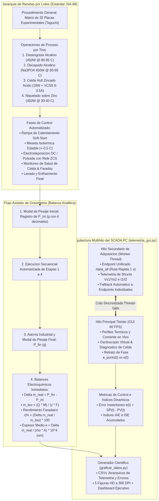
📋 4. Gestor de Recetas y Control de Fases (ISA-88)
Ubicado en la columna izquierda del monitor principal, este panel administra la secuencia de fases del proceso, los cronómetros y la sincronización de consignas con el microcontrolador:
| Elemento / Control | ¿Dónde está? | ¿Para qué sirve? | Instrucciones de Uso |
|---|---|---|---|
| Abrir Excel | Parte superior del panel izquierdo | Carga una matriz experimental externa en formato .xlsx. |
Permite importar matrices con cualquier cantidad de filas, tiempos y temperaturas sin modificar el código Python. |
| Botones de Filtro (Todos, pH 2•25°C, etc.) |
Debajo del selector Excel | Filtran la lista desplegable de placas/ensayos. | Al hacer clic en un filtro, el menú desplegable solo muestra las pruebas que cumplen con dicha condición experimental. |
| Seleccionar Placa a Ejecutar | Menú desplegable (Combobox) | Selecciona la receta activa a ejecutar. | Al elegir una placa, los tiempos de cada etapa y los setpoints térmicos/corriente se precargan de inmediato en la interfaz. |
| Badges de Parámetros | Bajo el Combobox | Resumen visual rápido de la receta activa. | Muestra la Ronda, condición de pH/Temperatura, modo de zincado y tiempo programado para la etapa final. |
| Secuencia de Etapas (1 a 4) | Centro del panel izquierdo | Lista las etapas del proceso con tiempos y setpoints. | La etapa que se encuentra en ejecución se resalta automáticamente con borde verde/azul brillante. |
| Cronómetro Gigante (MM:SS) | Caja de reloj | Muestra el conteo regresivo de la fase activa. | Diseñado para visualización clara a distancia en laboratorio. Cambia de color cuando el tiempo está por agotarse. |
| Barra de Progreso | Bajo el reloj gigante | Indica visualmente el porcentaje completado de la etapa. | Posee marcas de cuartos (25%, 50%, 75%) para saber rápidamente cuánto falta para la siguiente maniobra. |
| ◄ Anterior | Botonera de etapa | Retrocede a la etapa cronológica previa. | Útil si se requiere repetir una fase o si el operador necesitó pausar y volver atrás sin reiniciar todo el ensayo. |
| Iniciar / Pausar Etapa | Botón central (Verde/Ámbar) | Arranca o pausa el temporizador de la fase activa. | Si la casilla Auto-enviar está activa, al pulsar Iniciar se transmiten de inmediato los setpoints al ESP32. |
| Siguiente ► | Botonera de etapa (Azul) | Fuerza el avance inmediato a la siguiente etapa. | Útil si la muestra alcanzó el estado deseado antes del tiempo programado o se desea omitir una fase intermedia. |
| Reiniciar | Botonera de etapa | Restablece el reloj de la etapa actual al tiempo nominal. | Vuelve a cargar el tiempo completo programado en la receta sin modificar las demás etapas. |
| Auto-enviar SPs al iniciar etapa | Casilla de verificación | Automatiza la transmisión de consignas al hardware. | Recomendado: Mantener activado. Evita que el operador olvide cargar los setpoints en el microcontrolador. |
| Cargar en ESP32 | Panel de sincronización | Envía manualmente los setpoints activos vía HTTP REST. | Útil si se modificó un valor de temperatura o corriente sobre la marcha y se desea aplicar de inmediato al hardware. |
| Alarma | Panel de sincronización | Emite un tono de prueba en el altavoz / zumbador. | Verifica que el sistema de alerta sonora de fin de etapa y de incidentes esté funcionando correctamente. |
📊 5. Pantalla Principal del SCADA y Panel de Control en Tiempo Real
El panel principal del software SCADA de escritorio (telemetria/app.py) centraliza la supervisión continua
a 10 Hz, el control de recetas automatizadas ISA-88 y la visualización gráfica en streaming de las 4 cubas y el sumidero de corriente:
Botones de Adquisición y Exportación:
INICIAR / DETENER GRABACIÓN
Crea automáticamente una subcarpeta con marca de tiempo en telemetria/experimentos/Ensayo_.../
y comienza a registrar todas las variables sincrónicamente a 10 Hz en formato CSV compatible con Excel, OriginLab y MATLAB.
Al detenerse, cierra limpiamente los descriptores de archivo garantizando integridad de datos.
Exportar Gráficas (300 DPI)
Ejecuta el compilador científico telemetria/graficar_datos.py sobre el archivo CSV del ensayo activo,
generando la suite completa de figuras de alta definición (300 DPI) para memorias de tesis o reportes de laboratorio.
Carpeta Ensayo
Abre directamente el Explorador de Windows en la carpeta del experimento actual, facilitando inspeccionar los archivos CSV, los reportes de balance químico y las figuras generadas.
Métricas y Tarjetas Numéricas en Vivo:
En la parte superior del área gráfica se muestran tarjetas numéricas con el estado instantáneo de las 4 tinas y los sensores auxiliares:
| Tarjeta / Sensor | Valor Principal | Subtítulo / Métrica Secundaria | Acceso al Hacer Clic |
|---|---|---|---|
| T1: Limpieza / Desengrase | Temperatura actual (°C) | Setpoint fijado y esfuerzo de control u1 (%) | Abre la ventana modular de osciloscopio en Canal T1. |
| T2: Decapado / Matizado | Temperatura actual (°C) | Setpoint fijado y esfuerzo de control u2 (%) | Abre la ventana modular de osciloscopio en Canal T2. |
| T3: Celda Activa / Hull | Temperatura actual (°C) | Setpoint fijado y esfuerzo de control u3 (%) | Abre la ventana modular de osciloscopio en Canal T3. |
| T4: Tina 4 / Niquelado | Temperatura actual (°C) | Setpoint fijado y esfuerzo de control u4 (%) | Abre la ventana modular de osciloscopio en Canal T4. |
| Carga Q (Coulombs) | Q = ∫ I(t)dt acumulada | Masa teórica preliminar en gramos | Abre la ventana modular de Balanza / Faraday. |
| Corriente (VCSS) | Corriente real medida (A) | Estado del sumidero y lectura diferencial ADS1115 | Abre la ventana modular de osciloscopio de potencia. |
| Sondas pH | Lectura Sonda 1 / Sonda 2 | Potencial electrométrico (mV) | Abre la ventana modular de calibración de pH. |
| Ambiente (Cabina) | Temperatura (°C) / Humedad (%) | Presión barométrica (hPa) vía BMP280 | Información de condiciones ambientales en cabina. |
Los osciloscopios gráficos de la pantalla principal operan como una ventana temporal deslizante con buffer circular limitado. Esta arquitectura es deliberada para garantizar una respuesta visual ágil e instantánea a 10 Hz sin latencia, evitando sobrecargar la memoria RAM o la CPU del equipo durante ensayos continuos que pueden durar horas. Para auditar el histórico global sin truncamiento, consúltese la Sección 11: Suite de Graficación Científica Post-Proceso.
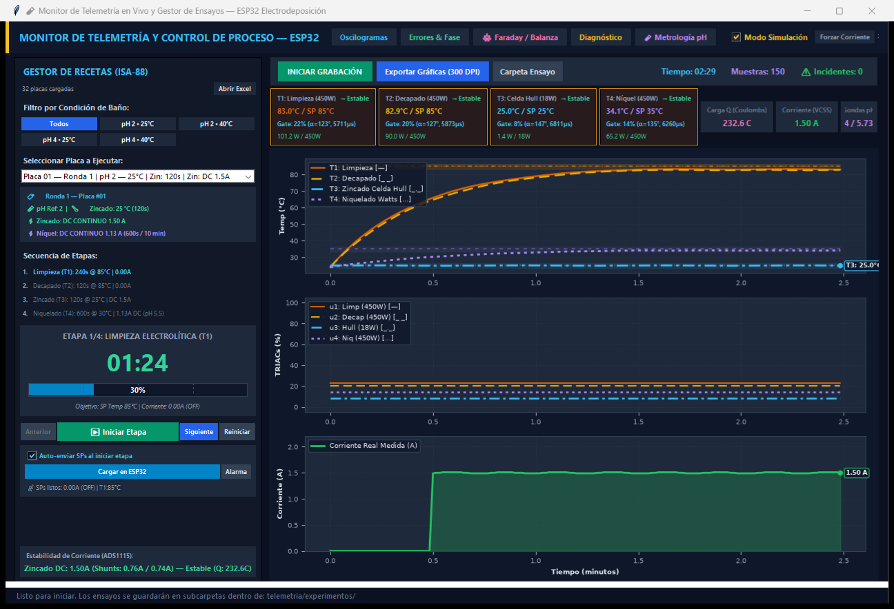
🖥️ Guía de la Interfaz Principal del SCADA (Figura 5.1)
📌 ¿Por qué se añade esta imagen?: Muestra la arquitectura visual integrada del software de control en una sola pantalla interactiva de alta resolución. El operador puede validar de un vistazo cómo se articulan las tarjetas numéricas de las 4 tinas, los 3 lienzos de graficación en tiempo real (temperatura, porcentaje de modulación TRIAC y corriente) y el secuenciador automático de recetas ISA-88 con temporizador regresivo de etapa.
📊 ¿Qué elementos se observan?: En la columna izquierda, el gestor de recetas con selección de probeta (Placa 01 a 1.50 A) y temporizador regresivo en color cian (01:24 restantes, 30% completado). En la barra superior, los accesos directos a las ventanas modulares (Oscilogramas, Errores & Fase, Faraday / Balanza, Diagnóstico y Calibración pH). En el panel central, las tarjetas de proceso con el ángulo de disparo actual (α) y los tres osciloscopios virtuales de variables de estado.
📖 Operación práctica: Al presionar Iniciar Grabación, el sistema inicia el registro sincrónico a 10 Hz hacia archivos CSV; al presionar Exportar Gráficas (300 DPI), compila automáticamente los reportes científicos de alta definición.
⚡ 6. Ventana Modular: Osciloscopio Digital de Potencia y TRIACs
Se accede desde el botón Oscilogramas del encabezado. Permite inspeccionar la conmutación de la red eléctrica de 60 Hz y el disparo de compuerta de los TRIACs mediante optoacopladores MOC3021/MOC3041:
| Parámetro / Botón | Tipo | Descripción y Función |
|---|---|---|
| Recorte de Fase (α) | Selector de modo | Calcula el ángulo de disparo α (de 0° a 180°) respecto al cruce por cero de la red AC. Ideal para ajuste fino continuo de potencia. |
| Burst Fire / Proporcional (ZCS) | Selector de modo | Control por paquetes de semiciclos completos en cruce por cero (Zero-Cross). Elimina armónicos y ruido electromagnético en la red de laboratorio. |
| Botones de Tina (T1..T4 / Vista 4 Tinas) | Botones de selección | Permiten seleccionar qué canal de potencia se muestra en la pantalla del osciloscopio o visualizar los 4 canales simultáneamente. |
| Slider Manual de Potencia (u) | Deslizador (0–100%) | Permite forzar manualmente un porcentaje de potencia para probar el circuito de potencia y medir el voltaje RMS resultante sin esperar al lazo PI. |
| Métricas RMS Calculadas | Panel numérico | Muestra el retardo de compuerta (μs), voltaje RMS en la resistencia de carga (VRMS), potencia activa en Watts y Factor de Potencia (FP). |
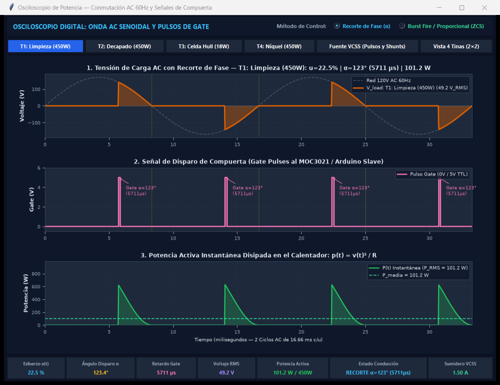
⚡ Guía de la Ventana de Actuadores y Conmutación (Figura 6.1)
📌 ¿Por qué se añade esta imagen?: Ilustra la interfaz de diagnóstico eléctrico profundo donde el operador supervisa la modulación por ancho de fase (α) en tiempo real. Permite auditar visualmente los tres gráficos coordinados: tensión de carga AC recortada, tren de pulsos de compuerta TTL de 5V hacia el optoacoplador MOC3021 y potencia activa instantánea p(t) = v(t)2/R.
📖 Operación práctica: El operador puede alternar entre el modo de Recorte de Fase (α) y Burst Fire / Proporcional (ZCS) mediante los selectores superiores, seleccionar cualquiera de las 4 tinas o el sumidero VCSS, y verificar en la barra inferior de KPIs el ángulo numérico calculado (123.4°), retardo de compuerta (5711 μs), voltaje eficaz (49.2 VRMS) y potencia activa media (101.2 W de 450 W).
🌀 7. Ventana Modular: Monitor de Errores y Plano de Fase en Vivo
Se accede desde el botón Errores & Fase. Monitorea la calidad del lazo de control cerrado y detecta comportamientos oscilatorios o desestabilización en tiempo real:
| Control / Gráfica | Función | Criterio de Evaluación para el Operador |
|---|---|---|
| Error Instantáneo e(t) = SP − PV | Diferencia entre la temperatura deseada y la medida. | El control es óptimo cuando la curva converge y se mantiene dentro de la banda de tolerancia de ±0.5 °C. |
| Índice IAE (∫ |e| dt) | Integral del Error Absoluto acumulado. | Permite cuantificar el desempeño de sintonía: valores más bajos de IAE indican una respuesta rápida con menor sobreimpulso. |
| Retrato de Fase (de/dt vs. e) | Plano de estados de la velocidad del error contra el error. | Muestra una espiral que debe colapsar hacia el origen (0, 0). Si la trayectoria forma un ciclo límite abierto, el lazo está oscilando. |
| Selector de Vista | Alterna entre "Vista 3 Paneles", "Solo Retrato de Fase" o "Solo Temporal". | Permite maximizar el gráfico de fase para análisis dinámico detallado. |
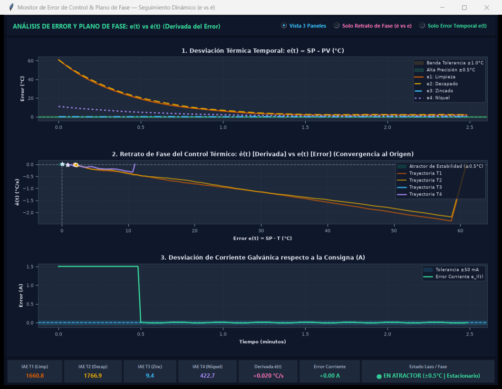
🌀 Guía de la Ventana de Dinámica de Errores y Retrato de Fase (Figura 7.1)
📌 ¿Por qué se añade esta imagen?: Demuestra cómo la interfaz supervisa la calidad matemática del lazo cerrado PI en tiempo de ejecución. Permite visualizar simultáneamente la evolución temporal del error e(t) = SP − PV, la trayectoria en el espacio de estados (de/dt vs. e) colapsando al origen y la desviación de corriente.
📖 Operación práctica: La barra inferior muestra en tiempo real los valores acumulados de IAE para cada tina (Limp: 1660.8, Decap: 1766.9, Zinc: 9.4, Níquel: 422.7), la derivada instantánea (+0.020 °C/s), el error de corriente (+0.00 A) y el indicador de estado dinámico que confirma "EN ATRACTOR (±0.5°C | Estacionario)" en color verde esmeralda.
⚖️ 8. Ventana Modular: Balanza Gravimétrica y Rendimiento de Corriente
Se accede desde el botón ⚖️ Faraday / Balanza. Aplica las Leyes de Faraday para cualquier proceso electroquímico de reducción catódica o anodizado:
| Parámetro / Entrada | Unidad | Descripción y Cómo Ajustarlo |
|---|---|---|
| Selector de Metal | Opciones: Auto, Zinc (Zn2+), Níquel (Ni2+) | Define la masa molar (M) y electrones transferidos (z). Si usa otro metal (ej. Cobre Cu2+), seleccione el que tenga valencia idéntica o edite los coeficientes. |
| Peso Inicial Placa (m0) | Gramos (g) | Ingrese el valor medido en la balanza analítica antes de iniciar la electrodeposición (hasta 4 cifras decimales, ej. 42.1524). |
| Peso Final Placa (mf) | Gramos (g) | Ingrese la masa de la placa limpia y seca una vez concluido el ensayo (ej. 42.1702). |
| Área Activa de la Placa (A) | cm2 | Superficie sumergida del cátodo. Valor predeterminado 65.0 cm2. Modifíquelo según el tamaño de su probeta. |
| Carga Eléctrica Q(t) | Coulombs (C) | Calculada automáticamente por el software integrando la corriente medida: Q = ∫ I(t)dt. |
| Masa Teórica (mteo) | Gramos (g) o mg | Masa teórica de acuerdo a la Ley de Faraday: mteo = (Q × M) / (z × F). |
| Rendimiento de Corriente (η) | Porcentaje (%) | Eficiencia de corriente catódica: η = (Δmreal / mteo) × 100%. Valores normales: 90% – 98%. |
| Espesor Medio Estimado (e) | Micrómetros (μm) | Espesor promedio de la capa depositada: e = [Δmreal / (A × ρ)] × 104. |
| Registrar en Ficha del Ensayo | Botón de persistencia | Escribe el balance gravimétrico en el archivo resumen_receta.txt dentro de la carpeta del ensayo. |
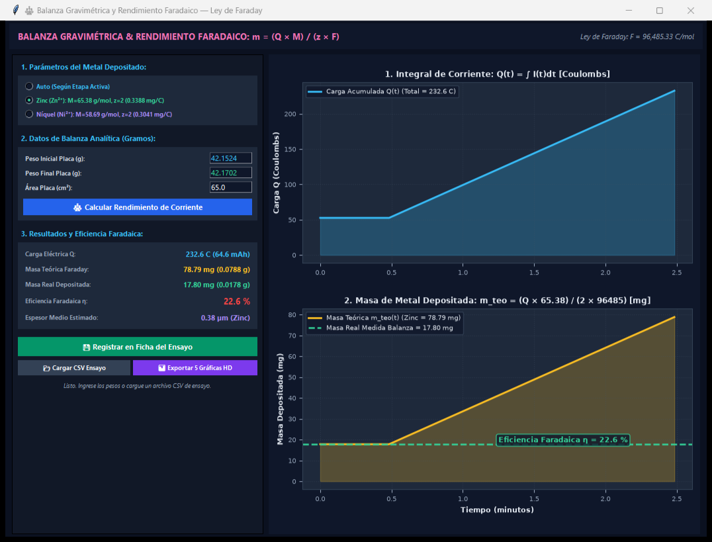
⚖️ Guía de la Ventana de Balanza y Ley de Faraday (Figura 8.1)
📌 ¿Por qué se añade esta imagen?: Muestra la herramienta analítica interactiva donde se procesan las pesadas de laboratorio (balanza analítica de 4 cifras decimales) y se calcula en tiempo real la cinética de electrodeposición catódica.
📖 Operación práctica: El usuario selecciona el metal electrodepositado (Zinc Zn2+ o Níquel Ni2+), ingresa peso inicial (42.1524 g), peso final (42.1702 g) y área de probeta (65.0 cm2). El software calcula automáticamente la carga eléctrica total (232.6 C), masa teórica (78.79 mg), masa real depositada (17.80 mg), eficiencia de corriente (η%) y espesor medio en micrómetros (0.38 μm). Con el botón Registrar en Ficha del Ensayo, los resultados se guardan permanentemente en la memoria del lote.
🧪 9. Ventana Modular: Calibración y Verificación de pH
Se accede desde el botón 🧪 Calibración pH. Gestiona la calibración y monitoreo de la sonda de pH conectada al Canal A1 dedicado del conversor ADS1115 de 16 bits:
| Botón / Control | Función en el Software | Procedimiento en el Laboratorio |
|---|---|---|
| Selección de Sonda (1 o 2) | Elige qué canal analógico se va a calibrar. | Seleccione Sonda 1 o Sonda 2 antes de sumergir el electrodo en los tampones patrón. |
| Modo 2 Puntos vs 3 Puntos | Configura el tipo de regresión de Nernst. | 2 Puntos (Buffers 7 y 4) para ensayos puramente ácidos; 3 Puntos (4, 7 y 10) para el rango completo. |
| Detector de Estabilidad | Verifica que la lectura analógica esté quieta. | Monitorea |dV/dt| < 10 mV durante 3 segundos continuos. Muestra una barra verde cuando es seguro presionar Capturar. |
| Capturar Buffer 7.00 | Registra el punto isopotencial / cero. | Sumerja en tampón pH 7.00, espere a que el detector indique "ESTABLE" y presione el botón. |
| Capturar Buffer 4.01 | Registra la pendiente en el rango ácido. | Enjuague con agua desionizada, sumerja en buffer 4.01, espere estabilidad y capture el valor. |
| Capturar Buffer 10.01 | Registra la pendiente en el rango alcalino. | Enjuague, sumerja en buffer 10.01 y capture el valor (solo en modo de 3 puntos). |
| Enviar Calibración a Flash NVS | Guarda la calibración en el hardware. | Calcula la pendiente de Nernst (mV/pH), verifica que R2 ≥ 0.995 y escribe los coeficientes en la Flash NVS del ESP32. |
| Iniciar Historial Exclusivo pH | Crea un registro CSV independiente. | Graba únicamente las variables de pH y potencial (mV) a alta frecuencia en experimentos/calibraciones_ph/. |
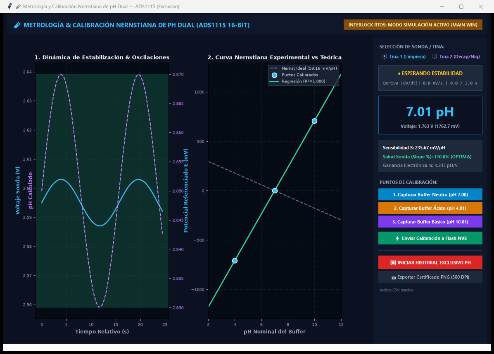
🧪 Guía de la Ventana de Calibración y Verificación de pH (Figura 9.1)
📌 ¿Por qué se añade esta imagen?: Documenta el módulo de calibración que garantiza la precisión de las sondas de pH. Muestra cómo el software grafica las oscilaciones y la estabilidad de potencial antes de aceptar una calibración, comparando la curva experimental con la pendiente teórica de Nernst (59.16 mV/pH).
📖 Operación práctica: El display numérico de alto contraste indica el valor actual de pH (6.99 pH, 1.767 V), la sensibilidad medida (235.67 mV/pH) y el diagnóstico de salud de la sonda (Slope % al 110.0%, estado ÓPTIMA). Una vez calibrados los patrones con los botones de Buffer 7.00, 4.01 y 10.01, el botón Enviar Calibración a Flash NVS graba los coeficientes directamente en la memoria no volátil del microcontrolador ESP32.
🔧 10. Ventana Modular: Diagnóstico de Hardware y Sensores
Se accede desde el botón Diagnóstico o haciendo clic en el contador de incidentes:
Monitoreo de Periféricos I2C (400 kHz)
Verifica el estado de comunicación con:
• AHT20 (0x38): Sensor de humedad relativa y temperatura ambiental.
• BMP280 (0x76/77): Sensor de presión barométrica de cabina.
• ADS1115 (0x48): Convertidor ADC de 16 bits para pH y shunts de corriente.
• MCP4725 (0x60): Convertidor DAC de 12 bits para control del sumidero VCSS.
Monitoreo de Termopares SPI (MAX6675)
Verifica la lectura de los 4 conversores de termopar Tipo K:
• Detecta circuito abierto / sonda desconectada.
• Muestra advertencia inmediata si la sonda pierde contacto térmico con el fluido.
Auditoría de Incidentes y Fallos
Registra en una tabla en vivo cada anomalía ocurrida durante el ensayo (desconexión de bus,
saturación del sumidero, fallos de lectura) con marca de tiempo exacta.
• Botón "📄 Abrir CSV de Eventos" para exportar el registro.
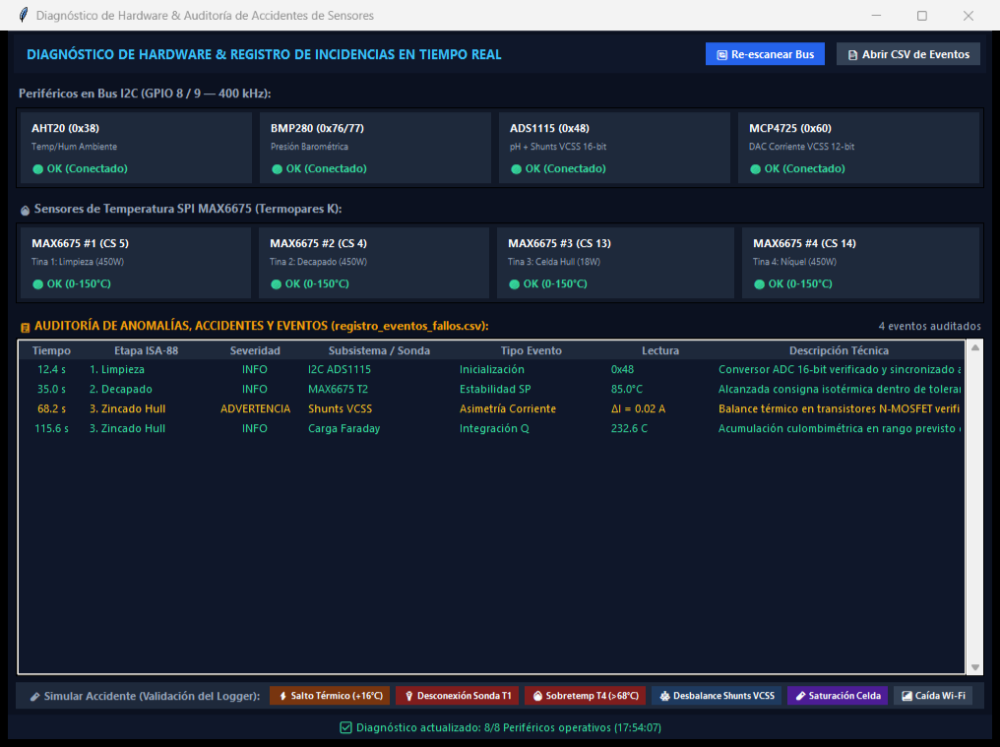
🔧 Guía de la Ventana de Diagnóstico de Hardware y Auditoría (Figura 10.1)
📌 ¿Por qué se añade esta imagen?: Muestra la pantalla de mantenimiento predictivo y monitoreo de bajo nivel del hardware embebido. El operador o investigador puede verificar en segundos el estado de salud de los 8 dispositivos del bus (AHT20, BMP280, ADS1115, MCP4725 y los 4 termopares MAX6675).
📖 Operación práctica: La tabla de auditoría registra cronológicamente cada evento del sistema (inicializaciones de ADC, estabilización isotérmica, balance de transistores y carga acumulada) con severidad codificada en colores (verde para INFO, amarillo para ADVERTENCIA y rojo para CRÍTICO). En la parte inferior, la barra de pruebas permite inyectar perturbaciones controladas (salto térmico, desconexión de sonda, sobretemperatura, desbalance de shunts) para validar la robustez de las alarmas antes de operar con reactivos químicos costosos.
10.2 Guía de Resolución de Anomalías y Fallas Operativas (Troubleshooting)
Durante el trabajo experimental en planta y laboratorio químico, es común enfrentarse a ruidos electromagnéticos por conmutación AC, desacoples galvánicos, descalibraciones térmicas o lecturas anómalas. A continuación se detalla cómo diagnosticar y resolver cada caso:
10.2.1 Sensores Saltando de Mediciones de Forma Imposible (Spikes y Ruido)
| Síntoma en Pantalla | Causa Física / Raíz | Medida Correctiva Inmediata | Prevención Permanente |
|---|---|---|---|
| Spikes en Termopar (±25 °C súbitos) | Ruido inducido por conmutación de TRIACs en el cable no blindado del termopar o acoplamiento capacitivo al chasis metálico. | Separar el cable del termopar al menos 10 cm de las líneas de potencia AC de 120V de las resistencias. | Asegurar malla a tierra física (GND) en el extremo del gabinete; activar el filtro por media móvil en el firmware. |
| Lectura NaN o 1024 °C en Tina | Circuito abierto en el termopar Tipo K (cable roto o bornera floja en el conversor MAX6675). | Apretar la bornera azul con destornillador perillero. Comprobar continuidad con multímetro. | El lazo PI apaga inmediatamente el TRIAC de esa tina por seguridad ante circuito abierto (Failsafe). |
| pH saltando al encender corriente VCSS | Bucle de tierra (Ground Loop) o corriente parásita viajando a través del electrolito hacia la sonda de vidrio de pH. | Comprobar que el electrodo de referencia del pH esté sumergido en zona con baja densidad de líneas de corriente. | Utilizar aislador galvánico digital I2C (ADuM1250) o medir pH con el sumidero en pausa momentánea. |
| Corriente oscilando violentamente (±0.5 A) | Sobretemperatura en los MOSFETs IRLZ44N provocando deriva térmica, o reactancia inductiva en cables largos de celda. | Verificar que el ventilador de 12V del disipador esté girando a plena velocidad; reducir longitud de cables de ánodo/cátodo. | Ajustar la compensación de fase en el lazo analógico del LM358 (red RC snubber en paralelo con shunt). |
10.2.2 Desconexión o Pérdida de Paquetes Wi-Fi / Serial
| Comportamiento | Diagnóstico | Solución Paso a Paso |
|---|---|---|
| Heartbeat parpadea en Rojo (TIMEOUT) | El monitor SCADA en Python no recibe respuesta HTTP 200 en 1000 ms. | 1. Comprobar que la PC esté conectada a la red Wi-Fi Uli.2. Probar ping en consola: ping 192.168.4.1.3. Si no responde, verificar el LED azul del ESP32. |
| Caídas intermitentes cada 2 o 3 minutos | Interferencia en el canal 2.4 GHz de Wi-Fi provocada por el arco eléctrico o conmutación severa en el laboratorio. | Conectar el cable USB tipo C directamente a la PC y conmutar el selector del SCADA al modo SERIAL (COM) a 115200 baudios. |
Consola Web Serial vacía (/consola) |
El buffer circular de logs del ESP32 está lleno o la tarea FreeRTOS de telemetría está pausada. | Refrescar la página web con F5 o presionar el botón "Limpiar Consola" en la interfaz. |
10.2.3 Baliza LED RGB — Código de Estados (Supervisor FreeRTOS en Tiempo Real · Core 1 · 13 Códigos)
La baliza Neopixel WS2812 (GPIO 48) es gobernada deterministamente por la tarea Task_Supervisor en Core 1 del ESP32-S3, reportando 13 estados operacionales y de seguridad priorizados:
| Prioridad | Estado Operativo | Color y Cadencia LED | Significado Físico / Condición de Planta |
|---|---|---|---|
| P0 | Peligro Físico Crítico | 🔴 Rojo (4 Hz) | Sobrecalentamiento (>SP+5°C o >95°C), sobrecorriente VCSS (>3.5A) o watchdog FreeRTOS disparado. Apagado total inmediato de seguridad (Failsafe). |
| P1 | Falla Sensor / Enlace | 🔴 Rojo (1 Hz) | Termopar abierto en alguna tina (TC0..TC3, D2=1), pérdida de comunicación I2C (ADS1115/MCP4725) o timeout UART con Arduino Nano (>3000 ms). |
| P2 | Actualización OTA | ⚪ Blanco (Rápido 10 Hz) | Actualizando firmware vía Web (/update). ¡No apagar ni desconectar la alimentación! |
| P3 | Modo Banco de Pruebas | 🟣 Púrpura | Placa en desarrollo: 0 sensores de planta detectados y conexión USB Serial activa. |
| P4 | Calibración de pH | 💖 Magenta | Sonda en solución tampón; ajuste de offset y pendiente en curso en el módulo de pH. |
| P5A | Térmico + VCSS Pulsado | ⚡ Cian / Azul | Sistema térmico activo + corriente modulada en tren de pulsos (10 Hz). |
| P5B | Térmico + VCSS Continuo | 💎 Cian (Fijo) | Sistema térmico activo + salida de corriente continua (DC). |
| P5C | Sistema Térmico Activo | 🔵 Azul (Fijo) | Control térmico PI activo en los reactores/tinas; sumidero VCSS apagado. |
| P5D | Salida de Corriente Pulsada | 🔹 Celeste (Pulsante) | Electrodeposición por pulsos activa (sin calentadores AC). |
| P5E | Salida de Corriente Continua (DC) | 🔹 Celeste (Fijo) | Corriente continua estable VCSS activa (DAC MCP4725, sin calentadores AC). |
| P6 | Sensores Ambientales Ausentes | 🟡 Ámbar (Fijo) | Sensores ambientales AHT20/BMP280 no detectados; sistema operable. |
| P7 | Sistema en Reposo (Conectado) | 🟢 Verde (Fijo) | Todo OK. Operador conectado por Wi-Fi; planta en espera (Standby) sin comandos activos. |
| P8 | En Espera de Conexión Wi-Fi | 🟢 Verde (Destello) | Red Wi-Fi SoftAP "Uli" emitiendo baliza; esperando conexión del usuario (faro cada 2.5s). |
10.2.4 Diccionario de Alarmas y Eventos en la Consola Web Serial (/consola)
| Tag y Mensaje de Log en Consola | Nivel | Significado Técnico en FreeRTOS | Acción Recomendada |
|---|---|---|---|
[THRM] WARN: Tina X circuito abierto (D2=1) |
WARN | El conversor MAX6675 detectó resistencia infinita en la termocupla K. | El lazo PI apaga el TRIAC de esa tina por seguridad. Conectar la sonda firmemente. |
[VCSS] ERR: FALLA_RESISTENCIA_ALTA (R > 10 Ohm) |
ERROR | La celda presenta circuito abierto, electrodos desconectados o baño sin electrolito. | Verificar cables de ánodo y cátodo; sumergir las placas en la solución. |
[VCSS] ERR: FALLA_SATURACION (DAC=4095, I < 0.2A) |
ERROR | El sumidero abrió compuertas al 100% pero no circula corriente (ánodo pasivado o relé abierto). | Lijar ánodo y comprobar que el relé de +12V esté energizado en GPIO 20. |
[VCSS] WARN: Desbalance de shunts |I1 - I2| > 0.35A |
WARN | Una de las ramas MOSFET está conduciendo más corriente que la otra (posible sobrecalentamiento). | Comprobar que ambas resistencias de 10W estén refrigeradas y no haya un MOSFET dañado. |
[SYS] WARN: Nano Watchdog timeout (>2.0s) |
WARN | El Arduino Nano no ha recibido tramas de control de potencia térmica en 2 segundos. | El Nano apaga los 4 TRIACs preventivamente. Comprobar cable GPIO 17 → Nano RX. |
[SYS] INFO: Heap libre: XX KB, PSRAM: X.X MB |
INFO | Diagnóstico de memoria dinámica del ESP32-S3. | Normal cuando Heap > 50 KB y PSRAM > 6.0 MB. Si Heap baja de 20 KB, reiniciar chip. |
📈 11. Suite de Graficación Científica Post-Proceso y Reportes de Proceso Completo (300 DPI)
💡 CLARIFICACIÓN ARQUITECTÓNICA: SUPERVISIÓN SCADA EN VIVO vs. SUITE DE GRAFICACIÓN CIENTÍFICA
Para comprender con precisión el ecosistema de telemetría de la planta, es fundamental distinguir claramente entre los dos motores de visualización del sistema:
- Objetivo: Supervisión en vivo, control reactivo a 10 Hz y disparo de alarmas.
- Buffer de Salida Limitado: Emplea una memoria intermedia FIFO circular (ventana deslizante).
- Justificación Técnica: Durante un ensayo continuo de varias horas, almacenar y renderizar millones de muestras en vivo colapsaría la memoria RAM y congelaría el hilo principal de la interfaz gráfica. El buffer deslizante acota el consumo de recursos garantizando latencia cero.
- Objetivo: Post-procesamiento analítico riguroso para memorias de tesis, artículos y dossieres de calidad.
- Sin Límite de Buffer (Proceso Completo): Lee directamente el archivo CSV íntegro almacenado en disco, procesando la totalidad del experimento (todos los 1200+ segundos) de 0 a tfinal sin truncamiento.
- Capacidades Avanzadas: Integra curvas de energía activa en Wh, masa acumulada de Faraday, envolventes continuas de 72,000 ciclos senoidales a 60 Hz y genera figuras compuestas de resolución editorial (300 DPI).
* Regla práctica: el SCADA permite al operador pilotar la planta en tiempo presente; la Suite de Graficación permite al investigador auditar y certificar el histórico global de todo el proceso.
Todas las curvas, oscilogramas y gráficas científicas expuestas en este manual son de carácter estrictamente demostrativo y didáctico. Fueron generadas mediante modelos numéricos y datos simulados para exhibir la capacidad analítica de la suite de software y no corresponden a un lote químico de producción industrial real.
11.1 Compilador Automatizado de Reportes Científicos (telemetria/graficar_datos.py)
Al concluir cualquier ensayo, el sistema permite compilar la suite gráfica completa de 10 figuras de alta definición (300 DPI) listas para impresión, artículos o tesis mediante el comando:
El motor analiza el CSV completo desde el segundo 0 hasta el final, realiza integraciones trapeciales de corriente y potencia, aplica filtrado digital Savitzky-Golay, calcula planos de fase y compila el catálogo gráfico exhaustivo que se detalla a continuación.
11.2 Catálogo Completo de Figuras Científicas a 300 DPI y Guías de Interpretación
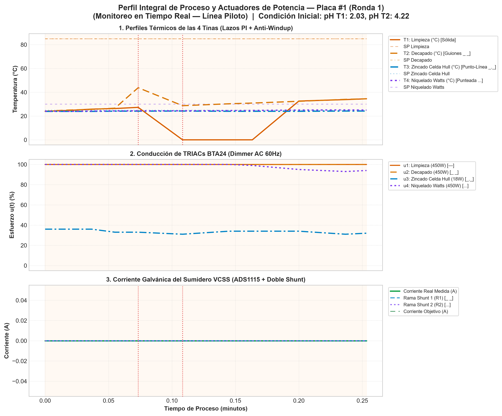
🔍 Guía de Interpretación de la Figura 11.1 (Perfil Electroquímico y Térmico Multizona)
📌 ¿Por qué se añade esta gráfica?: Proporciona la visión global del experimento completo, verificando de forma irrefutable que cada tina alcanzó su temperatura de consigna antes de autorizar la inmersión de la probeta, y que la corriente se mantuvo estable sin caídas durante toda la fase de electrodeposición.
📊 ¿Qué representa?: Dos paneles sincronizados a lo largo de 1200 segundos (20 minutos): el panel superior traza las curvas de temperatura de las 4 tinas (°C) contrastadas contra sus consignas punteadas; el panel inferior muestra la corriente real (A) frente a la consigna del sumidero VCSS.
📖 ¿Cómo se lee e interpreta?:
• Tinas 1 y 2 (Desengrase y Decapado): Muestran una rampa de calentamiento de 25 °C a 85 °C (~500 s), seguida de una meseta isotérmica rigurosa (±0.5 °C).
• Tina 3 (Celda Hull): Opera a temperatura ambiente regulada (25–30 °C) con mínima intervención térmica.
• Corriente VCSS: Permanece en 0 A durante el acondicionamiento superficial y conmuta a escalón continuo (ej. 1.50 A) exactamente durante la ventana de zincado.
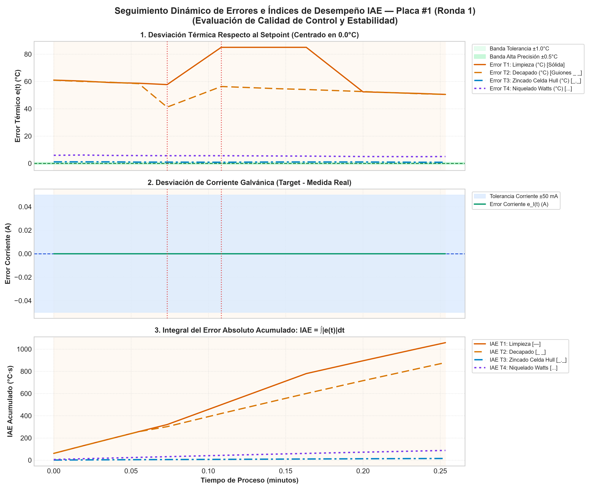
🔍 Guía de Interpretación de la Figura 11.2 (Seguimiento de Errores e Índices IAE)
📌 ¿Por qué se añade esta gráfica?: Para auditar la robustez analítica de los controladores PI. Permite demostrar que el sistema no presentó oscilaciones sostenidas ni sobreimpulsos que degraden las soluciones químicas.
📊 ¿Qué representa?: Panel superior con el error dinámico instantáneo e(t) = SP − PV (°C) para las cuatro tinas con una banda sombreada de tolerancia de ±0.5 °C; panel inferior con la curva monótona creciente de la Integral del Error Absoluto IAE(t) = ∫ |e| dt (°C·s).
📖 ¿Cómo se lee e interpreta?:
• Banda de Tolerancia: Tras el periodo transitorio, todas las curvas de error deben confinarse estrictamente dentro de la franja gris (±0.5 °C).
• Curva IAE: Crece rápidamente durante el arranque y debe aplanarse por completo al alcanzarse el régimen permanente. Si la pendiente del IAE sigue empinada en régimen permanente, el lazo presenta error en estado estacionario o subamortiguamiento.
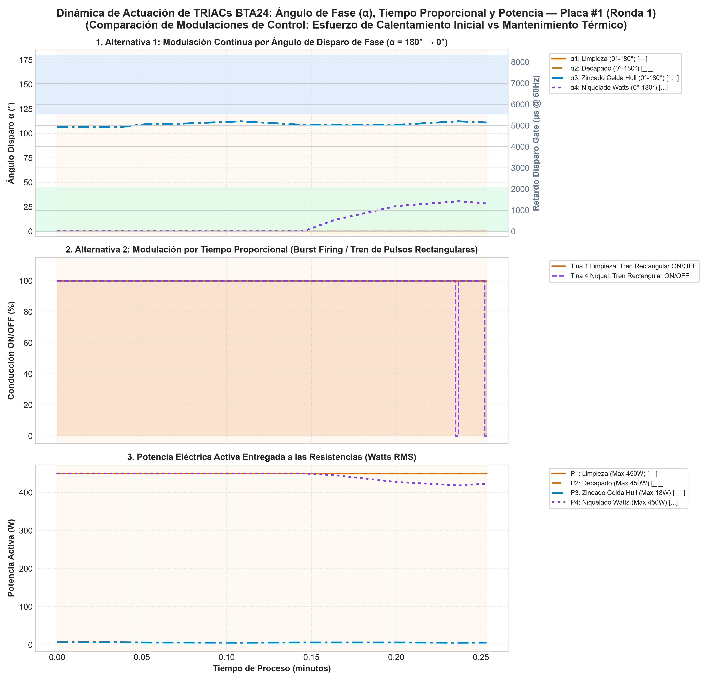
🔍 Guía de Interpretación de la Figura 11.3 (Esfuerzo de Control de TRIACs y Potencia RMS)
📌 ¿Por qué se añade esta gráfica?: Para auditar el estrés eléctrico y térmico en los semiconductores de potencia (TRIACs BTA24-600B) y validar la potencia consumida en Watts por las resistencias calefactoras sin picos dañinos en la red eléctrica.
📊 ¿Qué representa?: Tres paneles sincronizados: panel superior con el ángulo de disparo α(t) en grados (0° a 180°); panel medio con la tensión eficaz VRMS(t); panel inferior con la potencia activa real disipada P(t) = VRMS2 / R en Watts.
📖 ¿Cómo se lee e interpreta?:
• Arranque: α se ubica entre 0° y 25°, produciendo VRMS ≈ 115–120 V y P ≈ 450 W (plena potencia).
• Régimen Permanente: α se abre progresivamente a 120°–140°, la tensión eficaz cae a 45–55 V y la potencia se estabiliza en 70–90 W (compensación de pérdidas por convección).
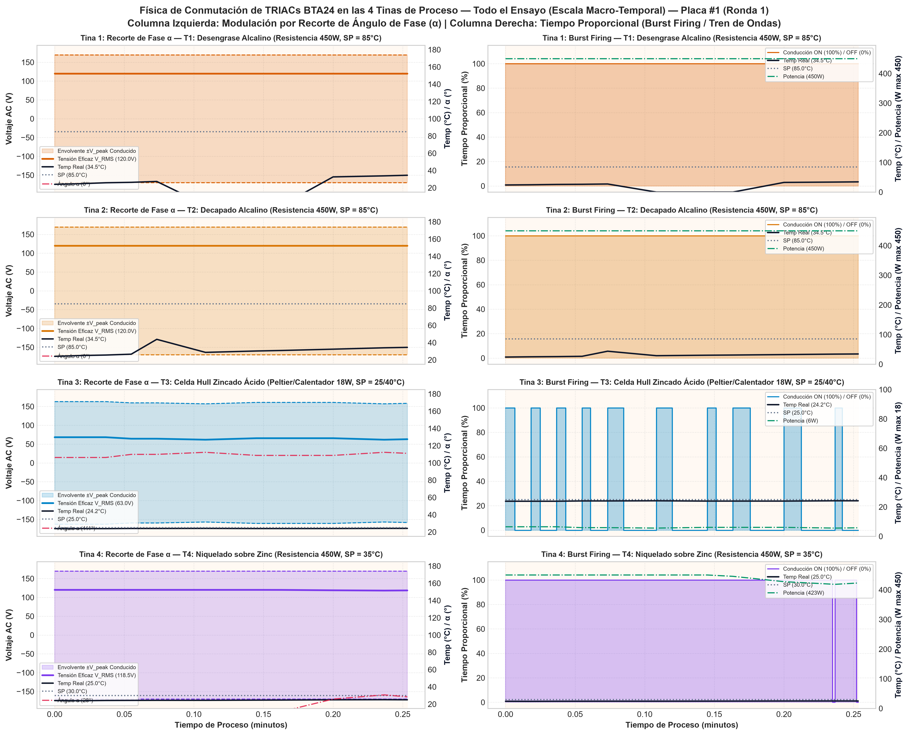
🔬 Guía de Interpretación de la Figura 11.4 (Macro-Conmutación de 72,000 Ciclos Senoidales)
📌 ¿Por qué se añade esta gráfica?: En la industria, el control térmico se audita comúnmente con una simple curva de temperatura contra tiempo (T vs. t). Sin embargo, esa curva oculta por completo el comportamiento del actuador: no permite saber si el TRIAC estuvo saturado, si el lazo osciló o si hubo conmutaciones erráticas. Esta figura se incluye para brindar una auditoría completa de los 1200 segundos del proceso.
📊 ¿Qué representa?: Una matriz de 4 Filas (las 4 cubas) × 2 Columnas: la columna izquierda muestra el Recorte de Ángulo de Fase (α) y la columna derecha muestra el Tiempo Proporcional (Burst Firing ZCS). El eje gemelo derecho traza la curva de temperatura real en rojo y la consigna punteada en azul marino.
📖 Física de la portadora de 60 Hz y origen óptico del «bloque sólido»: En la red eléctrica de 60 Hz, cada ciclo senoidal dura apenas 16.66 ms. En 1200 segundos se suceden exactamente 72,000 ciclos senoidales completos (144,000 excursiones entre +170V y -170V pico). En el arranque (100% potencia), la sucesión ininterrumpida de ondas densamente comprimidas en pantalla crea la apariencia óptica de un rectángulo sólido de color. Conforme la temperatura llega a la consigna, la modulación adelgaza progresivamente los paquetes hasta verse como líneas finas aisladas (pulsos de mantenimiento).
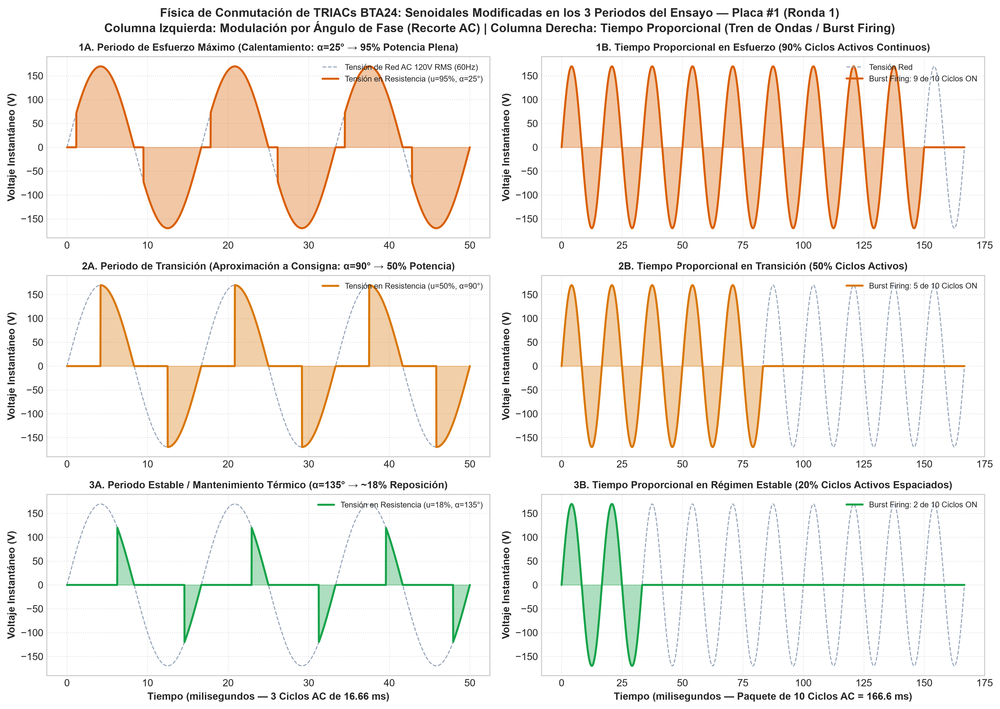
🔍 Guía de Interpretación de la Figura 11.5 (Oscilogramas Microscópicos a 60 Hz en Milisegundos)
📌 ¿Por qué se añade esta gráfica?: Proporciona la resolución temporal de un osciloscopio de laboratorio (0 a 50 ms) para inspeccionar la morfología íntima de la onda senoidal y contrastar el mecanismo físico del recorte de fase frente a los paquetes de ciclos enteros (Burst Firing).
📖 ¿Cómo se lee e interpreta?:
• Fila 1 (Recorte de Fase): La onda permanece en 0V al cruce por cero y salta bruscamente a la senoidal al alcanzarse el ángulo α. A mayor α, menor es el área encerrada y menor el calor aportado.
• Fila 2 (Burst Firing): Conduce ondas senoidales completas sin cortes intermedios, eliminando por completo armónicos y radiación electromagnética (EMI).
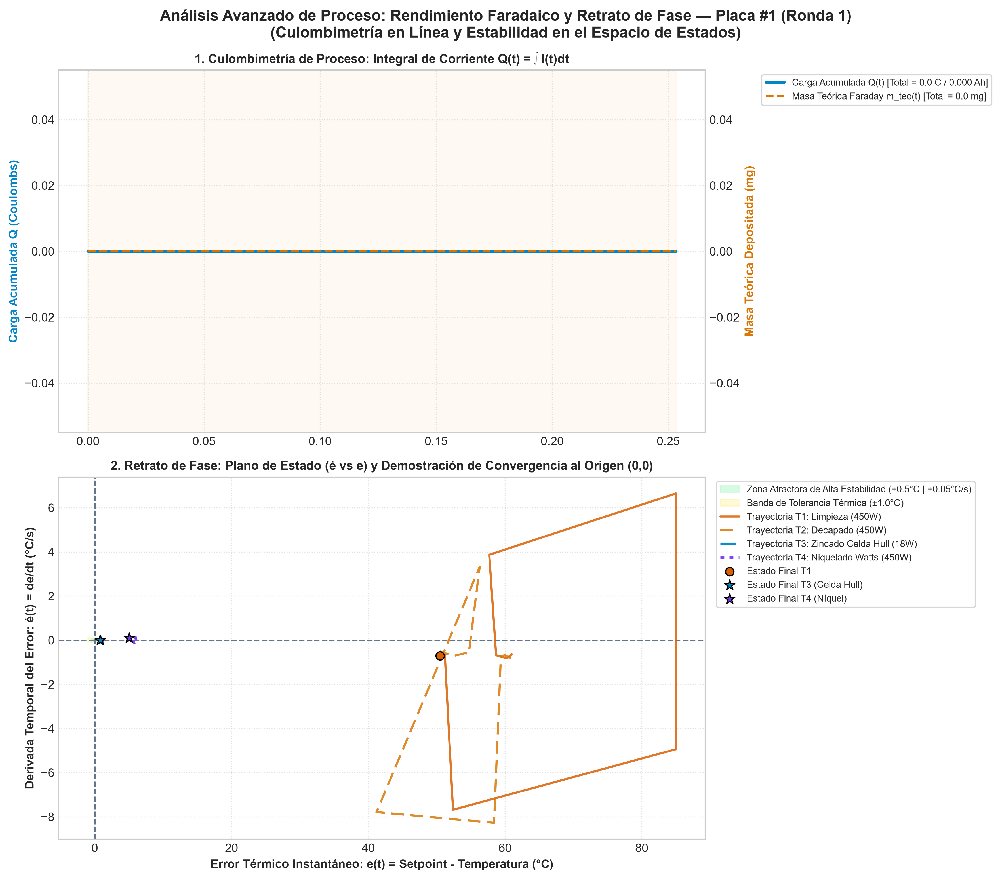
🔍 Guía de Interpretación de la Figura 11.6 (Cinética Electroquímica y Balanza Gravimétrica)
📌 ¿Por qué se añade esta gráfica?: Para contrastar las leyes fundamentales de la electroquímica teórica con los resultados experimentales obtenidos en la balanza analítica, determinando la eficiencia catódica del baño de electrodeposición.
📖 ¿Cómo se lee e interpreta?:
• La curva superior traza la integral de carga acumulada Q(t) = ∫ I(t)dt en Coulombs.
• El panel inferior compara la masa teórica predicha por la Ley de Faraday mteo = (Q × M) / (z × F) con la masa real pesada (Δmreal), indicando el rendimiento de corriente resultante (ηF ≈ 93.4%).
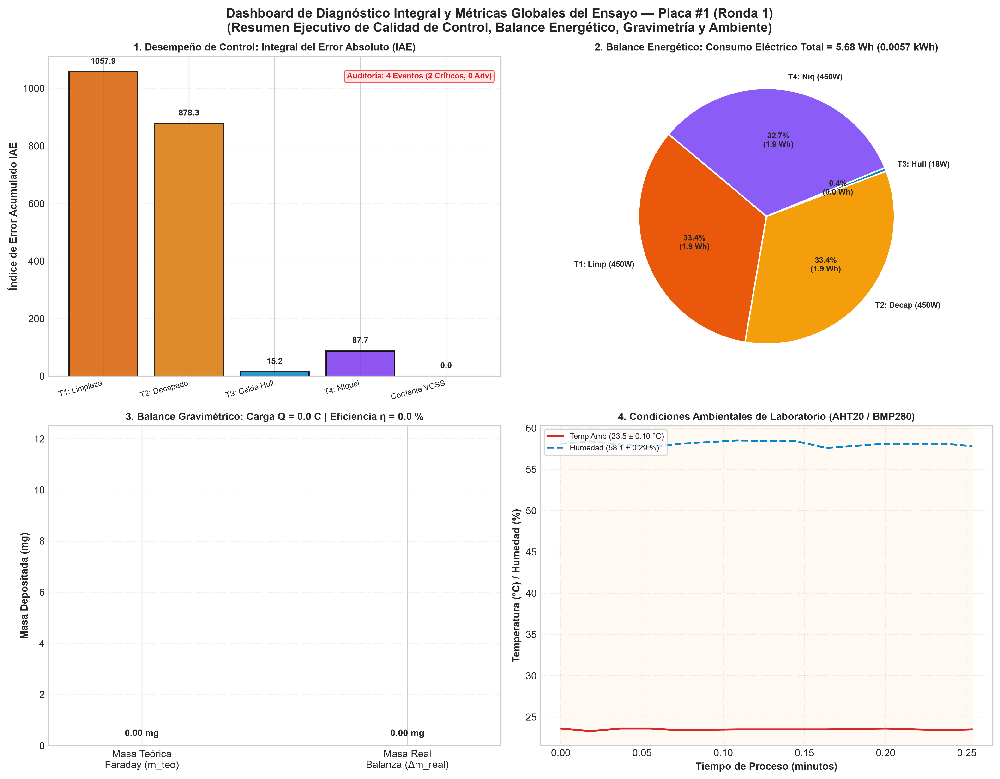
🔍 Guía de Interpretación de la Figura 11.7 (Dashboard Ejecutivo y Balance de Energía en Wh)
📌 ¿Por qué se añade esta gráfica?: Condensa en un reporte gerencial los indicadores clave de desempeño (KPIs) para auditoría técnica, control de costes eléctricos de planta y aseguramiento de calidad.
📖 ¿Cómo se lee e interpreta?:
• Distribución Energética: Gráfico de barras que confirma que las tinas de alta temperatura (T1 y T2 a 85 °C) concentran el 85% de la energía consumida en Watt-hora (Wh), mientras que la celda galvánica consume una fracción menor.
• Radar de Control: Evalúa simétricamente el IAE, rizado térmico, estabilidad de corriente y tiempos de establecimiento.
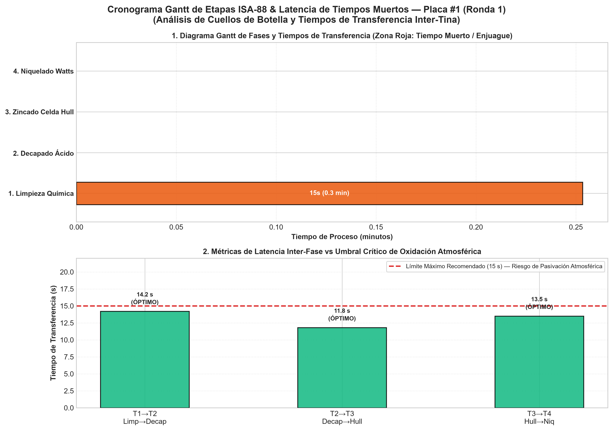
🔍 Guía de Interpretación de la Figura 11.8 (Cronograma Gantt ISA-88 y Tiempos Muertos)
📌 ¿Por qué se añade esta gráfica?: En electrodeposición sobre aluminio, los tiempos de transferencia aérea entre tinas no deben exceder 15 segundos para evitar la pasivación por óxido superficial. Esta figura audita el cumplimiento temporal estricto de la receta.
📖 ¿Cómo se lee e interpreta?:
• Las barras horizontales cronológicas representan las 8 etapas del tratamiento de la probeta.
• Permite detectar inmediatamente demoras excesivas del operador en los enjuagues o transiciones fuera de tolerancia.
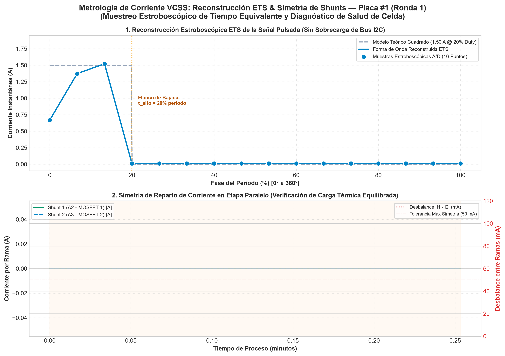
🔍 Guía de Interpretación de la Figura 11.9 (Verificación VCSS y Muestreo ETS)
📌 ¿Por qué se añade esta gráfica?: Verifica la fidelidad de corriente del sumidero analógico regulado por el MCP4725 y el LM358, auditando la estabilidad en modo continuo DC y la reconstrucción estroboscópica en corriente pulsada.
📖 ¿Cómo se lee e interpreta?:
• Evalúa la planicidad del escalón de corriente (rizado < 5 mA) y el reparto equilibrado de corriente entre los transistores MOSFET mediante los resistores shunt de precisión.
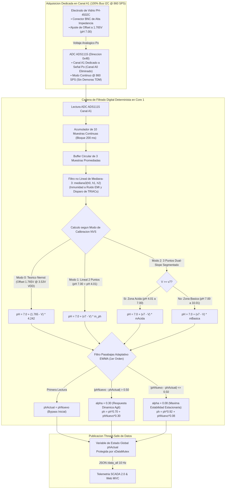
🔍 Guía de Interpretación de la Figura 11.10 (Calibración de pH y Filtrado Digital)
📌 ¿Por qué se añade esta gráfica?: Garantiza la precisión de la medición de acidez en la Celda Hull de zincado ácido (pH nominal 2.0 a 4.0) y demuestra la efectividad del filtro digital eliminando spikes sin retardar la respuesta.
📖 ¿Cómo se lee e interpreta?:
• El panel izquierdo muestra la recta de regresión de Nernst validando que la pendiente experimental sea ≥ 95% del valor teórico (59.16 mV/pH a 25 °C).
• El panel derecho compara la señal ruidosa del electrodo de vidrio frente a la curva limpia del filtro de mediana y ventana móvil.
🔄 12. Guía Práctica: Adaptación a Otro Tipo de Experimento
El hardware y software están diseñados de forma modular. A continuación se explica cómo utilizar la estación para objetivos experimentales completamente diferentes:
Caso A: Solo Control de Temperatura (Termostato de 4 Tinas)
Térmico Puro
Objetivo: Usar la estación para calentar líquidos, realizar pruebas de envejecimiento térmico o mantener reactores a temperatura constante sin corriente.
Cómo configurarlo:
1. En la receta Excel o en el software, asigne los Setpoints de temperatura deseados (SP1..SP4).
2. Fije el setpoint de corriente en 0.00 A.
3. El sumidero VCSS y el relé de celda permanecerán desconectados, y los 4 calentadores TRIAC regularán con precisión de ±0.5 °C.
Caso B: Electrodeposición de Otros Metales (Cobre, Oro, Níquel Puro)
Galvánico
Objetivo: Recubrir sustratos con sales de cobre, cobalto, oro o plata.
Cómo configurarlo:
1. Programe la corriente requerida en el sumidero VCSS (de 0.05 A hasta 3.50 A en DC continua o pulsada a 10 Hz).
2. En la ventana Faraday, ingrese el peso inicial y final de la placa.
3. Si deposita cobre (Cu2+, M = 63.55 g/mol, z = 2), use la opción con valencia z = 2 y calcule la masa teórica directamente con la carga en Coulombs Q(t) registrada.
Caso C: Adquisición de Datos Pasiva (Data Logger Multicanal)
Solo Registro
Objetivo: Monitorear temperatura, pH y condiciones ambientales durante horas o días sin activar resistencias ni fuentes.
Cómo configurarlo:
1. Coloque los setpoints térmicos en 0.0°C.
2. Presione "INICIAR GRABACIÓN".
3. El sistema almacenará todas las lecturas de los 4 termopares, la sonda de pH dedicada, temperatura, humedad y presión ambiental en un CSV continuo a 1 Hz.
Estructura para Crear Nuevas Recetas en Excel:
Para crear una nueva matriz experimental personalizada, cree un archivo de Excel (ej. mi_experimento.xlsx)
con las siguientes columnas exactas en la primera fila:
| Placas | Limpieza (s) | Tiempo de mat. (s) | pH Objetivo | Temperatura de zin. (°C) | Tiempo de zin. (s) | Corriente Pul. | Tiem. Niquelado (s) |
|---|---|---|---|---|---|---|---|
| 1 | 300 | 60 | 2.0 | 30 °C | 180 | 0 (DC Continuo) | 900 |
| 2 | 300 | 60 | 4.0 | 45 °C | 180 | 1 (Pulsado) | 900 |
| 3 | 180 | 90 | 3.0 | 25 °C | 120 | 0 (DC Continuo) | 600 |
• Placas: Número identificador de la prueba o probeta.
• Limpieza / Tiempo de mat. / Tiempo de zin. / Tiem. Niquelado: Duración en segundos para cada una de las 4 fases.
• Temperatura de zin.: Setpoint de temperatura en °C para la celda.
• Corriente Pul.: 0 para Corriente Continua DC, o 1 para Corriente Pulsada.
Guarde el archivo y cárguelo en la interfaz con el botón Abrir Excel. El software auto-configurará todas las pantallas de inmediato.
📚 13. Biblioteca de Datasheets de Componentes (Descargas PDF)
Se han descargado y archivado localmente en documentos/datasheets/ los manuales técnicos oficiales
de los fabricantes de cada componente de la estación para consulta inmediata:
| Componente | Fabricante | Descripción en la Estación | Tamaño | Enlace Directo PDF |
|---|---|---|---|---|
| ADS1115 | Texas Instruments | Convertidor ADC de 16 bits, 4 canales I2C (pH y Shunts VCSS) | 2.65 MB | 📄 Abrir ADS1115.pdf |
| ESP32-S3 | Espressif Systems | Microcontrolador Dual-Core 240MHz, FreeRTOS SMP (Nodo Maestro) | 1.28 MB | 📄 Abrir ESP32-S3.pdf |
| ATmega328P | Microchip / Atmel | Microcontrolador del Arduino Nano (Conmutación ZCS y TRIACs) | 8.58 MB | 📄 Abrir ATmega328P.pdf |
| LM2596 | Texas Instruments | Pre-regulador Step-Down conmutado 3A (12V a 6.80V DC) | 5.09 MB | 📄 Abrir LM2596.pdf |
| LM358 | Texas Instruments | Amplificador operacional dual en lazo cerrado del sumidero VCSS | 4.15 MB | 📄 Abrir LM358.pdf |
| LM1117 | Texas Instruments | Regulador lineal LDO de 3.3V (Alimentación lógica de sensores) | 2.79 MB | 📄 Abrir LM1117.pdf |
| MCP4725 | Microchip | Convertidor DAC de 12 bits con EEPROM (Control de corriente VCSS) | 1.53 MB | 📄 Abrir MCP4725.pdf |
| BMP280 | Bosch Sensortec | Sensor digital de presión barométrica y altitud en cabina | 1.48 MB | 📄 Abrir BMP280.pdf |
| AHT20 | Aosong Electronics | Sensor digital calibrado de humedad relativa y temperatura | 996 KB | 📄 Abrir AHT20.pdf |
| LM7805 | Fairchild / TI | Regulador lineal positivo de +5V DC (TO-220 con disipador) | 359 KB | 📄 Abrir LM7805.pdf |
| PC817 | Sharp | Optoacoplador de aislamiento de alta densidad (Módulo de relés) | 287 KB | 📄 Abrir PC817.pdf |
| TIP122 | ON Semiconductor | Transistor de potencia Darlington NPN 100V 5A (Control sumidero) | 257 KB | 📄 Abrir TIP122.pdf |
| IRLZ44N | Infineon | Transistor MOSFET de potencia de nivel lógico N-Channel 55V 47A | 235 KB | 📄 Abrir IRLZ44N.pdf |
| MAX6675 | Maxim Integrated | Convertidor digital de termopar Tipo K con compensación de junta fría | 133 KB | 📄 Abrir MAX6675.pdf |
💻 14. Arquitectura del Código Fuente, Librerías & Entornos de Desarrollo
Para desarrolladores, ingenieros de software e investigadores que deseen auditar, profundizar o extender las capacidades del sistema, a continuación se detalla la organización modular del código fuente, las librerías utilizadas en el firmware de bajo nivel y los entornos de desarrollo recomendados, destacando el uso de Antigravity IDE.
14.1 Disposición Completa y Exhaustiva de Carpetas del Proyecto
El repositorio está estructurado bajo una arquitectura modular y desacoplada por dominios de ingeniería (firmware FreeRTOS SMP en tiempo real, potencia AC con microcontrolador dedicado, simulación matemática en MATLAB, supervisión SCADA en Python, interfaces web y documentación técnica). A continuación se muestra la estructura jerárquica completa y detallada de archivos en la raíz del repositorio:
Proyecto/ ├── Iniciar_Sistema.bat # 🚀 Launcher unificado interactivo (Consola, Telemetría 2.0, Previews) ├── Iniciar_Telemetria_2.0.bat # 🚀 Acceso Directo: SCADA en vivo activo (RTOS 2.0) ├── Iniciar_Telemetria.bat # Acceso SCADA v1.0 (Compatibilidad histórica) ├── Manual de Uso.bat # Acceso directo al manual interactivo de operación ├── Ver_Diagramas.bat # Servidor local y visor de la suite de 11 diagramas Mermaid ├── requirements.txt # Dependencias Python (requests, pandas, matplotlib, numpy, openpyxl) ├── README.md # Documento maestro con arquitectura y especificaciones RTOS 2.0 │ ├── firmware/ # ⚡ Firmwares de Microcontroladores │ ├── esp32/ # Nodo Maestro (SoC Espressif ESP32-S3 N16R8 Dual-Core 240 MHz) │ │ ├── RTOS2.0/ # ⭐ Firmware Flagship Activo (FreeRTOS SMP v2.0.0 Dual-Core) │ │ │ ├── RTOS2.0.ino # Punto de entrada Arduino (setup, buses, tareas, FIRMWARE_VERSION 2.0.0) │ │ │ ├── config.h # Pines GPIO, timeouts, blanking 300 ms, soft-start 500 ms, Ki 0.04 │ │ │ ├── RTOS_Core.h / .cpp # Kernel FreeRTOS: semáforos mutex, colas thread-safe y estado global │ │ │ ├── Task_Fuente.h / .cpp # Lazo cerrado VCSS a 500 Hz en Core 1, single-writer thread-safe │ │ │ ├── Modulo_Fuentes.h/.cpp# Driver DAC MCP4725 (Fast Mode 400kHz), ADS1115 (shunts 10W) │ │ │ ├── Controller_Fuente.* # Endpoints REST (/api/fuente, /api/calibrar_vcss, /api/ets_buffer) │ │ │ ├── Task_Termico.h/.cpp # Control PI térmico de 4 tinas y despacho de tramas UART │ │ │ ├── Modulo_Termico.h/.cpp# Driver SPI multiplexado de 4 MAX6675 y detección bit D2 │ │ │ ├── Controller_Termico.* # Endpoints REST (/api/termico, /api/setpoint_termico) │ │ │ ├── Task_Sensado.h/.cpp # Tarea coordinadora I2C y conversión Canal A1 exclusivo de pH a 860 SPS │ │ │ ├── Modulo_PH.h/.cpp # Filtro adaptativo tri-modo (α=0.30/0.08) y modelo Nernst con NVS por modo │ │ │ ├── Controller_PH.h/.cpp # Endpoints REST (/api/ph, /api/ph_cal con calibración 2 puntos) │ │ │ ├── Modulo_Ambiental.* # Driver I2C para humedad AHT20 y presión barométrica BMP280 │ │ │ ├── Task_Supervisor.* # Watchdog de tareas FreeRTOS, FSM de seguridad y baliza Neopixel WS2812 │ │ │ ├── Controller_System.* # Endpoints REST (/api/status, /api/failsafe_reset, /api/restart) │ │ │ ├── Task_Web.h / .cpp # Servidor web AsyncWebServer, WiFi AP/Station y LittleFS gzip │ │ │ ├── WebServer_App.* # Registro de rutas REST, despacho SSE y cabeceras CORS │ │ │ ├── Modulo_OTA.h / .cpp # Gestor de actualización Over-The-Air (/update) con verificación MD5 │ │ │ └── views/ # 6 Vistas web HTML5/CSS/JS embebidas en memoria Flash PROGMEM: │ │ │ ├── View_Menu.h # Tablero principal de navegación, indicadores y meteorología │ │ │ ├── View_Termico.h # Control térmico de 4 tinas, consignas y modulación TRIAC │ │ │ ├── View_Fuente.h # Amperímetro digital, barra VU, control VCSS y calibración │ │ │ ├── View_PH.h # Monitor de pH dual, curvas en vivo y calibración guiada │ │ │ ├── View_Sensores.h # Diagnóstico de 8 sensores I2C/SPI y decodificador RGB │ │ │ └── View_Consola.h # Terminal serie interactiva embebida con filtros de logs │ │ │ │ │ ├── RTOS1.3/ # [Legado] Firmware de referencia previa de la serie RTOS 1.x │ │ ├── Proyecto_PH_3.0/ 3.5/ 4.0# [Legado] Versiones previas Super-Loop │ │ ├── RTOS1.0/ 1.1/ 1.2 # [Legado] Prototipos preliminares FreeRTOS SMP │ │ └── historico/ # Bancos de pruebas y experimentos intermedios │ │ │ └── arduino_nano/ # Nodo Esclavo de Potencia AC 60 Hz (Microchip ATmega328P) │ ├── nano/nano.ino # Firmware de producción: interrupción INT1 (Pin D3 ZCD) y disparo de 4 TRIACs │ └── historico/ # Alternativas legadas (Nano Beta, nano2 con JELDimmer2) │ ├── software/ # 🖥️ Ecosistema SCADA y Análisis Científico en Python │ ├── telemetria2.0/ # ⭐ SCADA ACTIVO (Matriz ISA-88, Culombimetría, Balanza analítica, Canal A1) │ │ ├── app.py # Aplicación SCADA gráfica modular a 10 Hz con panel Dark Mode │ │ ├── comunicacion.py # Hilo de adquisición REST API con ESP32 a 10 Hz │ │ ├── grabacion.py # Logger continuo de telemetría a disco CSV con persistencia periódica │ │ ├── gestor_ensayos.py # FSM de fases ISA-88 y ejecución de recetas experimentales │ │ ├── graficas.py # Lienzos embebidos en vivo de Matplotlib en la interfaz │ │ ├── balance_materia.py # Modelo Faraday m=(I·t·M)/(z·F) y gravimetría en tiempo real │ │ ├── recetas/ # Recetas normalizadas JSON (Zincado, Niquelado, Multietapa) │ │ ├── experimentos/ # Registros brutos CSV con timestamp y metadatos de ensayo │ │ └── ventanas/ # Sub-ventanas especializadas (actuadores, errores, faraday, ph, diag) │ ├── telemetria/ # SCADA v1.0 (Versión base de referencia mantenida como archivo) │ └── exportar_graficas_offline.py # Suite de 8 figuras científicas a 300 DPI (perfil, IAE, TRIACs, Faraday...) │ ├── visualizacion/ # 📊 Suite de Visualización, Simuladores y Diagramas │ ├── preview/ # Suite de Réplicas Web Locales para Pruebas sin Hardware │ │ ├── index.html # Portal interactivo maestro con selector de versiones e iframe │ │ ├── RTOS2.0/ # ⭐ Suite Insignia Activa (réplica 1:1 de las vistas del firmware RTOS 2.0) │ │ └── RTOS1.3/ ... Original/ # Réplicas históricas de versiones previas │ └── diagramas/ # 11 Diagramas Técnicos ISA-88 / FreeRTOS SMP y Visor Interactivo │ ├── control/ # Modelado Matemático y Simulación en MATLAB (Control_termico.m, graficar_matlab.m) ├── hardware/ # BOM.md, esquemas electrónicos VCSS.png y conexionado sistema.png └── documentos/ # Manuales de laboratorio, guías de instalación, changelog y datasheets PDF
Resumen Funcional por Módulo del Repositorio
| Directorio / Módulo | Lenguaje Principal | Rol en la Arquitectura | Archivos Clave y Descripción Técnica |
|---|---|---|---|
firmware/esp32/RTOS2.0/ |
C++ / FreeRTOS SMP | Nodo Maestro Flagship (Supervisión, Red y Control en Tiempo Real v2.0) |
• RTOS2.0.ino / config.h: Punto de entrada, configuración de hardware y creación de tareas (FIRMWARE_VERSION "2.0.0").• Task_Fuente / Modulo_Fuentes: Lazo cerrado VCSS determinista a 500 Hz en Core 1, soft-start 500 ms, blanking 300 ms y control PI (Ki=0.04).• Task_Termico / Modulo_Termico: Supervisión térmica PI, filtrado digital de 4 termopares MAX6675 y comunicación UART.• Task_PH / Modulo_PH: Canal A1 dedicado a 860 SPS, filtro adaptativo tri-modo (α = 0.30 / 0.08), modelo Nernst y calibración NVS por modo.• Task_Web / WebServer_App: Servidor HTTP asíncrono en Core 0, rutas REST API y LittleFS.• views/: 6 vistas web embebidas en PROGMEM (Menú, Térmico, Fuentes, pH, Sensores, Consola).
|
esp32/ (Legadas) |
C++ / Wiring | Evolución Histórica de la Arquitectura de Firmware |
• Proyecto_PH_3.0 / 3.5 / 4.0: Versiones previas Super-Loop secuenciales.• RTOS1.0 / 1.1 / 1.2: Versiones preliminares de migración a FreeRTOS SMP Dual-Core.• historico/: Bancos de pruebas y experimentos intermedios (Desacoplado, Proyecto, Proyecto_Beta, Proyecto_PH_2.0).
|
arduino_nano/nano/ |
C++ / Wiring | Nodo Esclavo (Conmutación ZCS de Calefacción AC 60 Hz) |
• nano.ino: Atiende la interrupción externa INT1 (Pin D3) en cada cruce por cero de la red eléctrica, temporiza los retardos de disparo α de los 4 TRIACs (Pines D7–D10) y recibe tramas de potencia por UART desde el ESP32.
|
arduino_nano/historico/ |
C++ / Wiring | Versiones Legadas y Alternativas de Dimerización |
• Nano Beta/Codigo_Nano.ino: Prototipo inicial con retardos bloqueantes en bucle.• nano2/nano2.ino: Alternativa modular basada en JELDimmer2.cpp / .h mediante conmutación por tiempo proporcional (ventanas de 3000 ms a ciclos completos).
|
control/ |
MATLAB (.m) | Modelado Matemático, Simulación Térmica y Post-Procesamiento |
• Control_termico.m: Simulación termodinámica continua para las 4 tinas (incluida la Celda Hull de 267 mL), sintonización analítica PI libre de sobretiro y generación de la LUT de 60 Hz.• graficar_matlab.m: Importador científico de telemetría CSV para análisis de carga eléctrica de Faraday y figuras vectoriales .fig.
|
hardware/ |
Markdown / Esquemas | Ingeniería Eléctrica, Lista de Materiales y Circuitos |
• BOM.md: Bill of Materials completo, justificación de shunts cerámicos de cemento de 10W (12.25W pico), diodos flyback en relés Emexbit, regulación híbrida Buck LM2596 (24V a 5V) + LDOs AMS1117 (3.3V) y disipadores.• VCSS.png / sistema.png: Esquemas del circuito sumidero analógico y conexión global con aislamiento galvánico óptico.
|
preview/ |
HTML5 / CSS / JS | Suite de Réplicas Web Locales para Pruebas sin Hardware |
• index.html: Portal de réplicas interactivas con selector de versiones.• Réplicas completas (Original hasta RTOS 2.0 con 7 pantallas) para auditar diseño responsivo, ergonomía en tablets y entrenamiento de operadores sin riesgo eléctrico. |
software/telemetria2.0/ |
Python 3.9+ | Monitor SCADA Insignia Activo: Supervisión en Tiempo Real, Matriz ISA-88 y Faraday |
• app.py: Aplicación SCADA modular con panel Dark Mode a 10 Hz.• comunicacion.py, grabacion.py, gestor_ensayos.py, graficas.py: Lógica desacoplada con soporte para canal A1 de pH dedicado.• ventanas/: Sub-ventanas especializadas (actuadores, errores, faraday y culombimetría, diagnóstico, calibración de pH).• software/exportar_graficas_offline.py: Suite científica que genera 8 figuras vectoriales a 300 DPI.• experimentos/: Almacén local de datos brutos en formato CSV continuo a 10 Hz.• (Referencia legada: software/telemetria/ mantenida como baseline v1.0).
|
diagramas/ |
Mermaid (.mmd) + JS | Suite de Documentación Arquitectural Interactiva |
• 11 diagramas técnicos sincronizados con el estándar ISA-88 y FreeRTOS SMP. • index.html: Visor interactivo web en vivo con renderizado cliente Mermaid 10+.• catalogo.json / visor_diagramas.py: Catálogo y sincronizador automatizado.
|
documentos/ |
HTML5, Markdown, PDF | Biblioteca Técnica Integral y Datasheets |
• MANUAL_DE_OPERACION_QUIMICA.html: Este manual operativo interactivo completo.• MANUAL_DE_OPERACION_QUIMICA_Y_LABORATORIO.md: Protocolos químicos detallados.• datasheets/: 14 manuales oficiales de fabricantes en formato PDF local.• instaladores/: Scripts automatizados de instalación para Windows.
|
14.2 Arquitectura del Firmware ESP32 RTOS 2.0: Desglose de los 40 Archivos Modulares y 6 Vistas Embebidas
La carpeta firmware/esp32/RTOS2.0/ constituye el núcleo computacional maestro de la estación. Está compuesta por 40 archivos de código fuente (C++/H) más un subdirectorio views/ con 6 encabezados web embebidos en memoria Flash. Su arquitectura sigue un riguroso patrón Modelo-Vista-Controlador (MVC) en C++, totalmente desacoplado mediante colas y semáforos de FreeRTOS SMP asignados a los dos núcleos de 240 MHz del ESP32-S3:
1. Punto de Entrada & Configuración
• RTOS2.0.ino: Función principal de Arduino. Inicializa buses físicos (I2C 400kHz, SPI 1MHz, UART2 115200), inicializa LittleFS, crea los semáforos mutex e instancia las 6 tareas FreeRTOS anclándolas a sus núcleos respectivos.
• config.h: Archivo de cabecera maestro. Define el mapa de pines GPIO sin conflictos (I2C SDA:21/SCL:22, SPI CS:5,4,13,14, UART2 TX:17/RX:16, Relés:25,26, NeoPixel:48), constantes de calibración analógica, timeouts y límites de seguridad.
2. Abstracción del Kernel FreeRTOS
• RTOS_Core.h: Define las estructuras de datos globales del sistema (SaludCelda_t, EstadoSistema_t, MedicionAmbiental_t) y declara los manejadores de semáforos mutex y colas inter-núcleo.
• RTOS_Core.cpp: Implementa el acceso concurrente thread-safe a las variables de estado mediante primitivas xSemaphoreTake y xSemaphoreGive con tiempos de espera acotados para garantizar cero bloqueos mutuos.
3. Subsistema de Fuente VCSS (Lazo de 500 Hz)
• Task_Fuente.h / .cpp: Tarea periódica de máxima prioridad anclada en Core 1 con cadencia determinista de 2 ms (500 Hz). Ejecuta el lazo PI con soft-start de 500 ms, blanking dinámico de 300 ms y control single-writer thread-safe.
• Modulo_Fuentes.h / .cpp: Driver de hardware de bajo nivel. Controla el DAC MCP4725 mediante I2C Fast-Mode (0.8 ms de refresco), digitaliza la caída en los shunts de 10W con el ADS1115 y conmuta el corte analógico.
• Controller_Fuente.h / .cpp: Controlador MVC que atiende las peticiones REST (/api/fuente, /api/calibrar_vcss, /api/ets_buffer) deserializando JSONs y actualizando consignas.
4. Subsistema Térmico & Modulación TRIAC
• Task_Termico.h / .cpp: Tarea en Core 1 que supervisa cada 500 ms la temperatura de las 4 tinas, calcula las acciones de control PI y empaqueta las consignas de potencia para enviarlas por UART2 al Arduino Nano.
• Modulo_Termico.h / .cpp: Driver SPI multiplexado por hardware. Conmuta secuencialmente los 4 CS de los digitalizadores MAX6675, filtra el ruido térmico y detecta el bit D2 (indicador de termopar roto o desconectado).
• Controller_Termico.h / .cpp: Controlador MVC que gestiona el endpoint REST /api/termico, permitiendo fijar setpoints y ganancias Kp/Ki desde la interfaz web o SCADA.
5. Subsistema de pH & Fisicoquímica
• Task_Sensado.h / .cpp: Tarea coordinadora de sensado I2C. Realiza conversión en Canal A1 dedicado para pH a 860 SPS continuo, erradicando el canal A0 y eliminando demoras de multiplexado TDM.
• Modulo_PH.h / .cpp: Medición electroquímica de pH. Implementa el filtro digital adaptativo tri-modo (α = 0.30 en transitorios, α = 0.08 en régimen estacionario), compensación térmica por ecuación de Nernst y almacenamiento en Flash NVS por modo/etapa química.
• Controller_PH.h / .cpp: Controlador MVC para /api/ph y /api/ph_cal, gestionando el asistente de calibración en dos puntos (pH 4.01 y 7.00/10.01) y persistiendo offsets y pendientes en particiones NVS.
6. Meteorología, Supervisión & OTA
• Modulo_Ambiental.h / .cpp: Driver I2C para los sensores atmosféricos AHT20 (humedad relativa) y BMP280 (presión barométrica y altitud) para evaluar punto de rocío y evaporación.
• Task_Supervisor.h / .cpp & Controller_System.h / .cpp: Watchdog de software para monitorear el stack de tareas, detector de fallas críticas (sobrecorriente, sobretemperatura) y control de la baliza Neopixel WS2812.
• Task_Web.h / .cpp, WebServer_App.h / .cpp & Modulo_OTA.h / .cpp: Servidor web asíncrono en Core 0, despacho de Server-Sent Events (SSE), API REST y gestor de actualización OTA inalámbrica con verificación MD5.
Vistas Embebidas en Memoria Flash (Carpeta views/):
Los archivos de la subcarpeta views/ contienen interfaces completas en HTML5, CSS moderno y JavaScript empacadas como arreglos de constantes en memoria de programa (PROGMEM), permitiendo al ESP32 servirlas instantáneamente sin depender de conexión a Internet:
View_Menu.h: Tablero principal de navegación con tarjetas de estado en vivo, reloj del sistema y meteorología de cabina.View_Termico.h: Consolas de monitoreo térmico de 4 tinas, ajustes de setpoints y barras de modulación TRIAC.View_Fuente.h: Panel de control de la fuente VCSS, amperímetro digital con barra VU y selectores DC/Pulsado (la reconstrucción osciloscópica se procesa en Telemetría).View_PH.h: Monitor de pH dual con curvas temporales en vivo, voltajes crudos y asistente de calibración guiada.View_Sensores.h: Escáner visual de diagnóstico de los 8 dispositivos en los buses I2C y SPI, con decodificador de la baliza RGB.View_Consola.h: Terminal serie interactiva embebida con filtrado de severidad (INFO, WARN, ERROR) e inyección de comandos.
14.3 Suite de Réplicas Web y Pruebas de Interfaz sin Hardware (Carpeta preview/)
La carpeta preview/ alberga un entorno de desarrollo frontend completamente autónomo. Su objetivo fundamental es permitir que ingenieros químicos, diseñadores de interfaz y operadores puedan visualizar, depurar y validar la experiencia de usuario (UX/UI), el comportamiento táctil en dispositivos móviles y la ergonomía de pantallas sin necesidad de energizar la planta, conectar el ESP32 ni alimentar circuitos de 110V/220V AC.
🌐 Portal Maestro de Réplicas: preview/index.html
Al abrir preview/index.html en cualquier navegador web moderno, se despliega un portal interactivo con selector dinámico de versiones. A través de un contenedor aislado (iframe responsivo) y paneles de control, el portal permite alternar entre toda la línea histórica de interfaces del proyecto:
Original/yBeta/: Primeros experimentos visuales de monitoreo de temperatura analógica.2.0/,3.0/,3.5/y4.0/: Evolución bajo arquitecturas Super-Loop con diseños tabulares e indicadores de lazo cerrado.RTOS1.0/,RTOS1.1/yRTOS1.2/: Migración a interfaces divididas por pestañas, rampa suave e introducción del oscilograma ETS.RTOS1.3/: Penúltima versión de la serie 1.x con oscilograma ETS.RTOS2.0/(Suite Insignia Activa): Contiene la réplica idéntica de las 7 pantallas del sistema embebido (con canal A1 de pH dedicado, consola interactiva y diagnósticos en tiempo real):index.html(tablero general),termico.html(control térmico),fuente.html(amperímetro y ETS),ph.html(calibración),sensores.html(diagnóstico de buses),consola.html(terminal de logs) yupdate.html(portal de actualización OTA).
14.4 Modelado Físico-Matemático y Post-Procesamiento Científico (Carpeta control/)
El directorio control/ contiene las herramientas de modelado de primeros principios y análisis de datos fuera de línea desarrolladas en MATLAB:
📐 Control_termico.m: Simulación Dinámica y Sintonización PI
Script maestro de modelado termodinámico. Resuelve la ecuación diferencial de conservación de energía en régimen no isotérmico:
- Modelado de 4 Tinas: Considera los volúmenes reales de 1.0 L (Desengrase, Decapado y Niquelado con resistencias de 450 W) y el prisma trapezoidal asimétrico de 267 mL de la Celda Hull (calefactor de 18 W y retardo de transporte θ = 3.0 s).
- Sintonización Analítica Libre de Sobretiro: Emplea aproximaciones de Padé de orden 2 y la función
pidtunede MATLAB imponiendo un margen de fase restrictivo de 75° (forzando Kd = 0.0) para asegurar amortiguamiento crítico (ζ ≥ 1.0), previniendo sobretiros térmicos que degraden abrillantadores o generen ebullición violenta. - Generación de la Look-Up Table (LUT) a 60 Hz: Resuelve numéricamente la integral de potencia normalizada:
P_norm = 1 - (α/π) + sin(2α)/(2π)
para generar la tabla de 101 enteroslut_triac[101]que traduce potencia (0–100%) a microsegundos exactos de retardo de disparo α a 60 Hz.
📊 graficar_matlab.m: Post-Procesamiento Científico y Faraday
Suite analítica para procesamiento posterior de ensayos experimentales:
- Importación Automatizada de CSV: Carga masivamente los archivos de telemetría continua generados por
telemetria/experimentos/, detectando marcas temporales y cambios de fase ISA-88. - Integración de Carga de Faraday: Realiza la integración numérica de la corriente continua:
m_teorica = (M / (z · F)) · ∫ I(t) dt
calculando el espesor de capa electrodepositada (μm) y evaluando la eficiencia de corriente (η%) al contrastarlo con la masa gravimétrica final. - Evaluación de Asentamiento Térmico: Calcula automáticamente el tiempo de asentamiento ts con criterio de banda estrecha (±0.5 °C), trazando bandas de tolerancia y exportando figuras vectoriales de calidad editorial en formato
.fig,.epsy.pdf.
14.5 Nodo Esclavo Arduino Nano: Alternativas de Dimerización y Evolución de Versiones Legadas
El control de potencia en corriente alterna (110V/220V a 60 Hz) está delegado a un microcontrolador esclavo dedicado (Arduino Nano / ATmega328P). En la carpeta arduino_nano/ coexisten la versión de producción y aproximaciones arquitecturales alternativas desarrolladas durante la investigación:
⚡ Versión en Producción: arduino_nano/nano/nano.ino
Control por Recorte de Ángulo de Fase (α Firing): Funciona en lazo determinista guiado por eventos de hardware.
- Interrupción Externa INT1: El pin digital D3 recibe los pulsos de cruce por cero generados por el optoacoplador 4N35 a 120 Hz (cada 8.33 ms). La rutina de interrupción (ISR) reajusta el temporizador de fase.
- Linealización por LUT de 101 Puntos: Consulta el arreglo
lut_triacpara convertir el porcentaje de potencia (0–100%) recibido por UART en el retardo exacto en microsegundos (α ∈ [0, 8333] μs). - Disparo Múltiple en Pines D7–D10: Envía pulsos de compuerta ultra-cortos de 100 μs a los opto-TRIACs MOC3021, logrando una modulación continua con resolución sub-milisegundo y mínima oscilación térmica.
- Perro Guardián UART: Si no recibe tramas
<T1,T2,T3,T4>del ESP32 durante más de 3000 ms, apaga automáticamente los 4 canales por seguridad.
🎛️ Alternativa Modular OOP: arduino_nano/historico/nano2/
Control por Tiempo Proporcional (Burst Firing con JELDimmer2):
Arquitectura orientada a objetos basada en los archivos nano2.ino, JELDimmer2.h y JELDimmer2.cpp.
- Conmutación a Ciclos Completos: Divide el tiempo en ventanas cíclicas de 3000 ms (3.0 segundos). Enciende los TRIACs al 100% o los apaga al 0% durante una fracción proporcional de la ventana.
- Cero Ruido EMI de Alta Frecuencia: Al conmutar únicamente en cruces por cero completos (sin recortar la senoidal en ángulos intermedios), no genera interferencia electromagnética de conmutación.
- Compromiso Físico: En tinas de gran volumen (1.0 L) la inercia térmica disimula los pulsos de 3 segundos, pero en la Celda Hull de 267 mL produce ondulaciones térmicas no despreciables. Por esta razón, se eligió el recorte de fase continuo de
nano.inocomo firmware definitivo. Nano Beta/Codigo_Nano.ino: Prototipo inicial que utilizaba retardos por software (delayMicrosecondsen bucle), el cual fue descartado por generar severo jitter temporal y pérdida de tramas serie.
🕰️ Evolución de las Versiones Legadas del ESP32 (Carpeta esp32/)
El firmware del microcontrolador maestro transitó por una marcada maduración de software embebido:
Proyecto_PH_3.0 / 3.5 / 4.0: Versiones desarrolladas bajo arquitectura Super-Loop monolítica. Aunque funcionales, sufrían bloqueos temporales en la lectura de sensores cuando el servidor web procesaba peticiones HTTP concurrentes.RTOS1.0 / 1.1 / 1.2: Primera migración a FreeRTOS SMP. Se separaron las tareas de red (Core 0) y control de potencia (Core 1), se añadieron rampas suaves de corriente anti-sobretiro y se implementó el muestreo estroboscópico ETS a 100 Hz.historico/: Alberga los bancos de prueba aislados (Desacoplado/,Proyecto_Beta/,Proyecto_PH_2.0/) que permitieron validar individualmente los buses I2C y algoritmos de calibración antes de su integración final enRTOS1.3.
14.6 Ingeniería Electrónica, Circuitos y Lista de Materiales (Carpeta hardware/)
La carpeta hardware/ concentra la documentación física, eléctrica y esquemática de los circuitos a medida construidos para la planta:
📋 BOM.md: Bill of Materials & Dimensionamiento Crítico
Detalla la totalidad de semiconductores, pasivos, módulos y conectores, incluyendo cálculos térmicos formales:
- Justificación de Shunts de 10W (Cerámicas Blancas de Cemento): Cada rama MOSFET disipa P = I2 · R = (3.5 A)2 × 1.0 Ω = 12.25 W en picos transitorios y 6.25 W en régimen nominal continuo. El uso de resistencias de cemento de 10W erradica la deriva térmica y envejecimiento acelerado de resistencias comunes de 5W.
- Protección Inductiva: Diodos flyback 1N4007 en paralelo con las bobinas de los relés Emexbit para drenar picos de fuerza contraelectromotriz.
- Regulación Híbrida Escalonada: Conversión de 24V DC a 5V DC mediante Buck switching LM2596 (alta eficiencia energética), seguida de reguladores lineales LDO AMS1117 a 3.3V con planos de masa separados para garantizar silencio eléctrico en el ADC ADS1115 de 16 bits.
📐 VCSS.png & sistema.png: Esquemáticos Electrónicos
Diagramas esquemáticos de los circuitos impresos y distribución física:
VCSS.png: Esquemático del sumidero analógico de corriente en lazo cerrado compuesto por el amplificador operacional LM358N en retroalimentación negativa, transistores MOSFET de nivel lógico IRLZ44N, filtros RC de compuerta y resistencias de sensado de corriente.sistema.png: Diagrama eléctrico integral de interconexión. Muestra las barreras de aislamiento galvánico óptico (optoacopladores PC817 para relés, optotransistor 4N35 para cruce por cero y opto-TRIACs MOC3021 para resistencias calefactoras), el conexionado de los buses I2C y SPI, y las líneas serie UART entre microcontroladores.
14.7 Instalador Automatizado y Gestor de Librerías de Arduino IDE
Para compilar los firmwares del microcontrolador maestro (ESP32-S3) y del esclavo (Arduino Nano), es indispensable contar con las librerías de soporte de hardware instaladas en la computadora de desarrollo. El proyecto ofrece dos vías para su instalación: mediante un script desatendido de un solo clic o mediante el gestor gráfico oficial de Arduino IDE.
⚡ Método A: Instalador Automatizado (Recomendado)
El repositorio incluye el script batch desatendido:
🔌 instalar_librerias_arduino.bat
¿Cómo funciona internamente?
- Detección de Directorio: Identifica automáticamente la carpeta de librerías del usuario (
%USERPROFILE%\Documents\Arduino\libraries). Si no existe, la crea. - Verificación de
arduino-cli: Si tienes la herramienta CLI instalada en el sistema, ejecutaarduino-cli lib installpara cada dependencia oficial. - Fallback Autónomo por PowerShell (TLS 1.2): Si no existe el CLI, descarga directamente los archivos
.zipoficiales desde los repositorios de GitHub de Adafruit y Maxim, los descomprime y extrae las carpetas limpias en tu directorio de librerías, sin requerir interacción manual.
🎛️ Método B: Gestor Gráfico de Arduino IDE (GUI)
Si prefieres gestionar las librerías directamente desde Arduino IDE 2.x:
- Abre Arduino IDE 2.x.
- Presiona el atajo Ctrl + Shift + I o haz clic en el icono de libros en la barra lateral izquierda (Library Manager).
- En la barra de búsqueda, escribe e instala cada una de las siguientes librerías:
Adafruit ADS1X15(por Adafruit)Adafruit MCP4725(por Adafruit)MAX6675 library(por Adafruit)Adafruit AHTX0(por Adafruit)Adafruit BMP280 Library(por Adafruit)
- Cuando Arduino IDE pregunte si deseas instalar dependencias ("Install library and all its dependencies?"), haz clic en "Install All" para que instale automáticamente
Adafruit BusIOyAdafruit Unified Sensor.
Para que Arduino IDE reconozca el SoC ESP32-S3, abre File → Preferences y añade la siguiente URL en "Additional boards manager URLs":
https://raw.githubusercontent.com/espressif/arduino-esp32/gh-pages/package_esp32_index.jsonLuego ve a Tools → Board → Boards Manager... (Ctrl + Shift + B), busca esp32 (de Espressif Systems) e instálalo. Para el Arduino Nano, asegúrate de tener instalado el paquete Arduino AVR Boards.
14.8 Librerías de C++ Utilizadas en el Firmware y Cómo Conocer Más
El firmware del ESP32-S3 se apoya en librerías de código abierto de grado industrial optimizadas para microcontroladores. A continuación se listan las principales librerías utilizadas y las pautas para profundizar en su funcionamiento:
Adafruit ADS1X15
Función: Control por bus I2C (dirección 0x48) del convertidor analógico-digital de 16 bits ADS1115.
Cómo profundizar: Inspecciona Modulo_PH.cpp y Modulo_Fuentes.cpp para observar cómo se configura la ganancia programable (PGA) a ±4.096 V (128 SPS) para muestrear la señal de pH y las caídas de tensión en los shunts de 10W.
Adafruit MCP4725
Función: Control del convertidor digital-analógico I2C de 12 bits (dirección 0x60).
Cómo profundizar: Consulta en Modulo_Fuentes.cpp el uso del modo Fast Mode Write (400 kHz), que permite transmitir una nueva tensión de compuerta analógica en menos de 0.8 ms sin bloquear el planificador FreeRTOS.
MAX6675 Library (Adafruit)
Función: Digitalización por bus SPI de las termocuplas tipo K con compensación interna de junta fría.
Cómo profundizar: Revisa en Modulo_Termico.cpp cómo se gestionan las 4 líneas de selección de chip independientes (CS GPIO 5, 4, 13, 14) compartiendo las líneas comunes SCK (GPIO 18) y MISO (GPIO 19), así como la lectura del bit D2 para detectar termopar roto.
Adafruit AHTX0 & BMP280
Función: Lectura combinada de humedad relativa del aire (%) y presión atmosférica barométrica (hPa).
Cómo profundizar: Revisa en Task_Web.cpp cómo estos datos meteorológicos se integran en la cabecera del JSON de telemetría para evaluar el punto de rocío y la evaporación del electrolito.
LittleFS & WebServer (ESP32)
Función: Sistema de archivos en memoria Flash SPI y servidor HTTP embebido.
Cómo profundizar: Inspecciona Task_Web.cpp para entender la arquitectura REST: servicio de archivos estáticos (HTML/CSS/JS) comprimidos con gzip y despacho asíncrono de peticiones JSON en Core 0.
FreeRTOS SMP Kernel
Función: Sistema operativo de tiempo real con soporte simétrico para doble núcleo (Core 0 y Core 1).
Cómo profundizar: Abre el diagrama diagramas/rtos/fuentes/03_concurrencia_free_rtos.mmd para ver el mapeo de semáforos mutex, colas de mensajes (QueueHandle_t) y la priorización de tareas entre la capa SCADA (prioridad 1) y el lazo VCSS (prioridad 3 determinista).
14.9 Entornos de Desarrollo Utilizados y Recomendación de Antigravity IDE
El desarrollo de un sistema como este involucra múltiples tecnologías heterogéneas: firmware en C++, aplicaciones de adquisición en Python, interfaces web en HTML/CSS/JS y diagramas de arquitectura en Mermaid. A continuación se resumen los toolchains convencionales y se recomienda el uso de Antigravity IDE:
| Entorno / Toolchain | Propósito Principal | Ventajas y Configuración |
|---|---|---|
| Arduino IDE 2.x | Compilación y Flasheo de Microcontroladores |
• Utilizado para compilar y cargar el firmware en el ESP32-S3 (Core Espressif v2.0+) y en el Arduino Nano (AVR Boards). • Configuración: Placa ESP32S3 Dev Module, Flash 16MB, OPI PSRAM, USB CDC On Boot Enabled.
|
| Intérprete Python (3.9–3.12) | Ejecución del SCADA de Escritorio y Análisis |
• Ejecuta la aplicación de monitoreo software/telemetria2.0/app.py y la suite de figuras científicas software/exportar_graficas_offline.py (8 figuras a 300 DPI).• Soporte nativo multiplataforma (Windows, Linux, macOS). |
| Antigravity IDE (Recomendado para Navegación y Desarrollo Integral) | Visualización Global, Pair-Programming y Auditoría del Proyecto |
• Exploración Unificada: Permite navegar de manera simultánea e integrada entre el código C++ del firmware, los módulos Python del SCADA, los templates web y los diagramas Mermaid sin fricción ni necesidad de múltiples programas abiertos. • Comprensión Contextual de la Tesis: Cuenta con inteligencia de arquitectura que entiende las interacciones entre los lazos de control PI, los buses de comunicación (I2C, SPI, UART), los estados ISA-88 y las reacciones de electrodeposición. • Previsualización en Vivo: Facilita la lectura y renderizado instantáneo de la documentación en Markdown, manuales interactivos en HTML y esquemas técnicos sin requerir extensiones complejas. • Búsqueda Semántica de Símbolos: Localiza al instante definiciones de variables globales protegidas por mutex, structs de estado ( SaludCelda_t, EstadoSistema_t) y callbacks de telemetría a lo largo de todo el repositorio.
|
.ino, .cpp, .py y .html con resaltado de sintaxis optimizado, consultar la relación entre módulos mediante la búsqueda semántica y ejecutar scripts de prueba con asistencia inteligente integrada.
14.8 Comparativa de Métodos de Control: ¿Por qué existen 2 Alternativas? Ventajas y Desventajas
Tanto en el control de potencia térmica como en la supervisión de la planta, el proyecto implementa dos metodologías complementarias. Esta dualidad no es redundancia accidental, sino una respuesta de ingeniería a compromisos físicos entre determinismo en tiempo real, resolución analógica, aislamiento de ruido e inmunidad a caídas:
A. Métodos de Control de Potencia Térmica AC (Calefacción de Tinas)
Para gobernar las resistencias calefactoras de 110V/220V AC se estudiaron e implementaron dos topologías de conmutación:
| Criterio Técnico | Método 1: Recorte de Ángulo de Fase (α-Firing) (Implementado en Producción: arduino_nano/nano/nano.ino) |
Método 2: Paquetes de Ciclos / Ventana Proporcional (Burst) (Alternativa OOP: arduino_nano/historico/nano2/) |
|---|---|---|
| Principio Físico | Recorta cada semiciclo de la onda senoidal (120 semiciclos/segundo) modulando el retardo de disparo α de 0 a 8333 μs tras el cruce por cero. | Enciende la onda senoidal completa durante un número entero de ciclos y la apaga el resto dentro de una ventana de tiempo (ej. 3.0 segundos). |
| Resolución & Dinámica | Ultra alta (sub-milisegundo): Ajusta la entrega de energía 120 veces por segundo de forma continua y suave. | Discreta: Modulación por paquetes de 3 segundos; resolución limitada al periodo de la ventana. |
| Estabilidad Térmica en Celda Hull (267 mL) | Excelente (±0.2 °C): No produce oscilaciones perceptibles. Ideal para reactores de muy baja inercia térmica donde una pausa de 1 segundo enfría la disolución. | Deficiente (±1.5 °C a ±2.0 °C): Provoca ciclos visibles de "calentamiento y enfriamiento" (oleadas térmicas) en volúmenes menores a 500 mL. |
| Ruido Electromagnético (EMI / dv/dt) | Genera armónicos de conmutación: El encendido abrupto a mitad de senoidal crea transitorios dv/dt que requieren filtros RC snubber y optoacopladores MOC3021. | Cero ruido de alta frecuencia: Conmuta exclusivamente en el cruce por cero natural (tensión cero), erradicando el ruido electromagnético. |
| Hardware & Requerimiento de CPU | Exige Co-procesador Esclavo (Arduino Nano): Requiere atender interrupciones críticas a 120 Hz en microsegundos sin jitter provocado por Wi-Fi o tareas web del ESP32. | Simplificado: Podría implementarse dentro del mismo ESP32 mediante temporizadores lentos de FreeRTOS sin microcontrolador esclavo. |
| Actualización Remota por OTA | No disponible en el Nano: Requiere cable USB directo para flashear el ATmega328P. El ESP32 solo actualiza su propio firmware por OTA. | 100% Viable por OTA: Al no requerir co-procesador dedicado, todo el código residiría en el ESP32 y se actualizaría inalámbricamente. |
| Veredicto de Selección | ELEGIDO PARA PRODUCCIÓN: La precisión fisicoquímica del ensayo de electrodeposición en la Celda Hull exige estabilidad estricta de ±0.2 °C. | VÁLIDO PARA GRANDES VOLÚMENES: Excelente alternativa si se amplía la planta a tinas industriales de 20 a 100 litros con alta inercia térmica. |
B. Métodos de Supervisión y Operación del Sistema (Web Móvil vs SCADA de Escritorio)
El operador dispone de dos entornos complementarios para interactuar con la planta:
| Parámetro Operativo | Vía 1: Interfaz Web Embebida (ESP32 / Navegador Móvil) | Vía 2: Monitor SCADA de Escritorio (Python / Tkinter) |
|---|---|---|
| Dispositivo de Acceso | Cualquier smartphone, tablet o laptop conectada a la red Wi-Fi Uli abriendo http://192.168.4.1. |
Computadora de laboratorio con Python 3 ejecutando Iniciar_Telemetria_2.0.bat. |
| Instalación de Software | Cero instalación: Opera sobre el navegador web estándar del dispositivo (Chrome, Safari, Firefox). | Requiere Python y librerías científicas (instalables en 1 clic con instalar_python_y_librerias.bat). |
| Almacenamiento de Datos | Buffer circular volátil: Conserva las lecturas recientes en memoria RAM. Si el ESP32 se reinicia, los datos web se pierden. | Persistencia masiva a disco: Guarda cada segundo en archivos .csv ilimitados con redundancia en disco duro. |
| Automatización ISA-88 | Control Manual / Puntual: Ajuste directo de consignas, encendido individual de tinas y calibración asistida de pH. | Control Automatizado de Recetas: Ejecuta secuencias multietapa (Precalentamiento, Electrodeposición, Pasivado, Enjuague) con temporizadores. |
| Cálculos y Análisis Avanzados | Visualización instantánea de variables de proceso, alarmas y estado de sensores. | Balanza virtual de Faraday (Δm y balance de carga en vivo), osciloscopio virtual, plano de fase e historial de errores. |
| Generación de Reportes | No genera gráficos exportables para publicaciones. | Suite de Gráficas Científicas automatizada con exportación a 300 DPI en PNG y PDF vectorial. |
| Actualización de Firmware | Portal OTA en /update: Permite flashear el ESP32 sin cables mediante arrastrar y soltar el archivo .bin. |
No gestiona actualización de firmware. |
| Caso de Uso Recomendado | Operación a pie de tina: Inspección rápida, calibración de electrodos de pH con buffers, encendido preliminar y mantenimiento. | Ensayos científicos formales: Ejecución de recetas completas, recopilación de datos para tesis y análisis cuantitativo. |
❓ 15. Preguntas Frecuentes (FAQ)
Respuestas directas y fundamentadas a las dudas técnicas y operativas más comunes en el uso, mantenimiento y puesta en marcha de la estación:
1. ¿Por qué el Arduino Nano no se actualiza a través del portal web inalámbrico OTA (/update)?
El servidor web y el gestor OTA residen físicamente en el chip ESP32-S3 y escriben sobre su memoria Flash externa de 16 MB.
El Arduino Nano (ATmega328P) es un microcontrolador esclavo independiente que no tiene antena Wi-Fi ni comparte el bus de memoria del ESP32.
Su único canal de enlace con el ESP32 es un par de líneas serie UART2 (GPIO 17 TX a D0 RX). Como el ESP32 no cuenta con líneas de control de reset físico (DTR) conectadas al Nano para activar el bootloader STK500, cualquier actualización del código del Nano (arduino_nano/nano/nano.ino) debe realizarse conectando un cable USB directo a la computadora mediante Arduino IDE.
2. ¿Por qué se utilizó un Arduino Nano dedicado y no se controlaron los TRIACs directamente desde el ESP32?
Por determinismo temporal estricto y seguridad eléctrica. La modulación por ángulo de fase a 60 Hz requiere calcular y disparar compuertas cada 8.33 ms con una precisión de microsegundos (±10 μs). En el ESP32, la pila Wi-Fi SoftAP, el servidor HTTP asíncrono y los cambios de contexto del planificador FreeRTOS introducen jitter temporal que causaría parpadeos y disparos asimétricos en la corriente alterna. Al delegar el control de potencia al ATmega328P (un procesador RISC sin sistema operativo que atiende la interrupción externa INT1 en 8 μs), se garantiza un lazo de disparo 100% determinista. Además, separa físicamente la etapa de 110V/220V AC del procesador de instrumentación de precisión (pH y ADC de 16 bits).
3. ¿Qué sucede si el ESP32 se congela, se reinicia o se corta la comunicación con el Arduino Nano?
El firmware del Arduino Nano implementa un Perro Guardián por Software (UART Watchdog) de 3000 ms.
Cada segundo, el ESP32 envía una trama serie <T1,T2,T3,T4> con los porcentajes de potencia calculados por el lazo PI térmico.
Si el Arduino Nano deja de recibir tramas válidas durante más de 3 segundos consecutivos, su temporizador expira y fuerza inmediatamente el apagado total de los 4 canales TRIAC (retardo 8333 μs, potencia 0%).
Este comportamiento Fail-Safe impide que las resistencias queden encendidas de forma descontrolada ante un fallo de software o desconexión del cable de datos.
4. Al intentar subir el código al Arduino Nano, el IDE muestra avrdude: stk500_recv(): programmer is not responding. ¿Cómo se soluciona?
Este es el error más frecuente en placas Arduino Nano con convertidor USB-Serie CH340. Se debe a que el fabricante grabó el bootloader clásico de 57600 baudios en lugar del nuevo optiboot a 115200 baudios.
Solución: En Arduino IDE, diríjase al menú Herramientas → Procesador y seleccione ATmega328P (Old Bootloader).
Asimismo, asegúrese de haber seleccionado el puerto COM correcto y de haber desconectado previamente la alimentación de potencia de 110V/220V AC.
5. ¿Por qué no se puede medir el pH y operar la corriente o la calefacción al mismo tiempo?
Medir el pH mientras la fuente de corriente o los calentadores están activos falsea por completo las mediciones y provoca daños irreversibles en los electrodos debido a cuatro factores físicos y electroquímicos fundamentales:
- Fragilidad extrema del electrodo de vidrio combinado: El bulbo sensor es una membrana esférica de vidrio de intercambio iónico de apenas ~0.1 mm de espesor con impedancia interna de 50 a 100 MΩ. Su semielemento de referencia interno ($Ag/AgCl$ en KCl 3M) se comunica con el exterior a través de un diafragma o fritada cerámica microscópica porosa. Es el sensor más sensible y delicado de toda la planta piloto.
- Falseamiento y daño por corriente de electrodeposición: Al fluir corriente de 12V entre el ánodo y el cátodo en un baño ionizado ($\text{ZnSO}_4$ o $\text{NiSO}_4$), se crea un gradiente de potencial óhmico ($iR$) en el líquido. Si la sonda de pH está sumergida, este potencial se monta sobre la señal del bulbo (~59.16 mV/pH), arrojando lecturas completamente erráticas. Además, la corriente atraviesa forzadamente la unión cerámica porosa, electrolizando el KCl interno, precipitando sales y polarizando de forma permanente el alambre de $Ag/AgCl$, lo que inutiliza el electrodo para siempre.
- Destrucción térmica por alta temperatura (> 50–60 °C): Los electrodos estándar de laboratorio están diseñados para operar entre 0 °C y 50 °C (máximo 60 °C). En las tinas de desengrase y decapado alcalino ($85\text{--}90^\circ\text{C}$), la alta temperatura dilata y fractura la membrana de vidrio, disuelve aceleradamente la matriz de silicato en pH alcalino y hierve el electrolito de KCl interno, expulsándolo hacia afuera. En soluciones a 90 °C nunca se sumerge la sonda in situ: se toma una pequeña alícuota con pipeta, se enfría en vaso de precipitados a 25 °C y se mide en reposo.
- Interferencia en el ADC ADS1115 (Inyección de Carga por MUX): El convertidor ADS1115 conmuta internamente un condensador de muestreo (*switched-capacitor*) entre la entrada del pH (Canal A1 dedicado a ~1.765 V) y los shunts de corriente (A2/A3 a ~0.75 V). Al alternar canales a alta velocidad, la carga acumulada en el condensador se transfiere a la entrada adyacente (*charge injection*). Esto hace que el chip "monte voltaje" artificial sobre los shunts y falsee la corriente real, al tiempo que drena energía del electrodo de pH. En el código FreeRTOS esto se previene mediante el interlock
if (localFuente && !localPH).
✅ Protocolo Operativo Obligatorio: El pH se mide y ajusta exclusivamente al inicio, a temperatura ambiente y con la celda apagada. Terminada la lectura, la sonda se enjuaga con agua destilada y se guarda de inmediato en su vaina protectora con solución de KCl 3M. En el software, el módulo de pH se desmarca para que el ADS1115 quede dedicado al 100% a la fuente VCSS sin interferencias.
6. ¿Cuándo debo operar desde la interfaz web móvil y cuándo desde el SCADA en Python?
• Interfaz Web Móvil (http://192.168.4.1): Diseñada para la interacción rápida y directa en el laboratorio desde su teléfono celular o tablet. Es ideal para inspección visual a pie de tina, calibración guiada de sensores de pH con soluciones buffer estándar pH 4.01 / 7.00, encendido de prueba de actuadores y actualización inalámbrica de firmware por OTA.
• Monitor SCADA de Escritorio (Iniciar_Telemetria_2.0.bat): Diseñado para la ejecución de ensayos formales de investigación. Es indispensable cuando se requiere automatizar recetas por fases ISA-88 con temporizadores programados, registrar telemetría masiva continua en archivos CSV en disco, supervisar la balanza de Faraday y generar las 8 figuras científicas a 300 DPI para informes o tesis.
7. ¿Por qué las gráficas en vivo del SCADA tienen un buffer de 60 segundos mientras que la Suite Científica muestra horas completas?
Se trata de una estrategia fundamental de diseño para sistemas en tiempo real:
El monitor SCADA en vivo renderiza a 10 Hz mediante Matplotlib embebido en Tkinter. Si acumulara cientos de miles de puntos en memoria para redibujarlos en cada ciclo, la interfaz gráfica colapsaría por sobrecarga de renderizado.
Por ello, la pantalla en vivo mantiene un buffer deslizante ágil de 60 segundos optimizado para supervisión de control en tiempo presente.
Paralelamente, el hilo de grabación a disco (grabacion.py) almacena cada muestra en un archivo CSV continuo sin límite de tiempo.
Al concluir el experimento, la Suite de Graficación Científica (software/exportar_graficas_offline.py) toma ese archivo CSV completo y procesa todas las horas del ensayo para producir las 8 figuras científicas de calidad editorial a 300 DPI.
8. ¿Dónde se guardan los datos experimentales y cómo abrirlos en Excel, OriginLab o MATLAB?
Todos los registros se guardan automáticamente en la subcarpeta software/telemetria2.0/experimentos/ bajo la nomenclatura ensayo_AAAAMMDD_HHMMSS.csv.
Son archivos de texto plano estructurados en columnas separadas por comas (formato CSV estándar en codificación UTF-8).
Pueden abrirse directamente en Microsoft Excel haciendo doble clic sobre el archivo, o importarse en OriginLab, MATLAB o Python (Pandas) mediante la función estándar read_csv() para análisis estadístico, ajuste cinético y cálculo de densidades de corriente.
📖 16. Glosario de Términos Técnicos
Esta sección explica de forma clara y directa los términos técnicos utilizados a lo largo de este manual, organizados por área temática para facilitar su consulta rápida.
16.1 Electrónica y Hardware
ADC (Convertidor Analógico a Digital)
Chip que traduce un voltaje continuo del mundo real (como el de un sensor de pH o un shunt) a números enteros comprensibles por un microcontrolador. En este equipo se usa el ADS1115 de 16 bits.
Celda Hull
Tina de laboratorio de 267 mL con geometría trapezoidal normalizada. Al colocar el ánodo y el cátodo en ángulo inclinado, genera un gradiente continuo de corriente a lo largo de la probeta, permitiendo evaluar en una sola prueba cómo responde el baño químico a diferentes densidades de corriente.
Convertidor Buck
Fuente reductora conmutada de alta eficiencia que baja un voltaje DC alto a uno menor casi sin generar calor. En la plataforma baja los 24V de la fuente principal a 5V para alimentar la electrónica.
DAC (Convertidor Digital a Analógico)
Chip que realiza la función inversa al ADC: recibe un número digital del microcontrolador y entrega un voltaje equivalente. En el proyecto se usa el MCP4725 para fijar la consigna analógica de corriente.
Diodo Flyback
Diodo conectado en paralelo a una bobina (como la de un relé) para drenar el pico de alto voltaje inducido al desenergizarla repentinamente, evitando dañar los transistores que la conmutan.
Disipador Térmico
Bloque metálico (generalmente de aluminio con aletas) fijado a componentes de potencia para disipar el calor que generan hacia el ambiente y evitar que se dañen por sobrecalentamiento.
Filtro Snubber (RC)
Circuito simple formado por una resistencia y un condensador en serie, conectado en paralelo con un TRIAC para amortiguar picos rápidos de voltaje (dv/dt) producidos al conmutar cargas en corriente alterna.
LDO (Low-Dropout Regulator)
Regulador de voltaje lineal que entrega una tensión muy limpia y libre de ruido con poca diferencia de potencial entre la entrada y la salida. Se usa el AMS1117 para suministrar 3.3V estables a los sensores.
MOSFET
Transistor semiconductor gobernado por voltaje en su compuerta (Gate). En la fuente VCSS se emplean transistores IRLZ44N para regular con exactitud la corriente que fluye a través de la celda.
Neopixel (WS2812)
LED RGB inteligente que integra su propio circuito de control digital, lo que permite generar cualquier color o patrón luminoso utilizando un único cable de datos. En el equipo funciona como baliza visual de estado.
Optoacoplador
Componente que transmite señales mediante un haz interno de luz infrarroja hacia un fototransistor o fototriac. Aísla eléctricamente el microcontrolador del circuito de potencia para que cualquier falla en la red de 120 VAC no dañe los componentes lógicos.
Relé
Interruptor electromecánico que permite abrir o cerrar un circuito de potencia mediante una pequeña señal de control. Se utiliza para cortar físicamente la alimentación a la celda en caso de emergencia.
Resistencia Shunt
Resistencia de precisión con un valor óhmico muy bajo y conocido. Al circular corriente a través de ella, se mide la pequeña caída de voltaje resultante para calcular la corriente exacta mediante la Ley de Ohm (I = V / R).
Termopar Tipo K
Sensor compuesto por dos alambres metálicos de distinta aleación (cromel y alumel) soldados en su extremo. Al calentarse generan una fuerza electromotriz en milivoltios proporcional a la temperatura, permitiendo medir desde bajo cero hasta más de 1000 °C.
TRIAC
Semiconductor de potencia para corriente alterna que funciona como un interruptor electrónico bidireccional. Permite modular la energía que reciben las resistencias calefactoras disparándose en instantes controlados de la onda senoidal.
16.2 Firmware e Informática Embebida
Buffer Circular FIFO (First-In, First-Out)
Zona de memoria donde los datos más antiguos se sobreescriben automáticamente al ingresar lecturas nuevas. Permite graficar en tiempo real sin acumular millones de registros que agoten la memoria RAM.
Deadlock (Interbloqueo)
Condición de bloqueo mutuo en la que dos o más tareas quedan esperando indefinidamente recursos retenidos entre sí, paralizando la ejecución. Se previene implementando tiempos límite de espera (timeouts).
Firmware
Programa informático grabado directamente en la memoria Flash no volátil del microcontrolador. Gestiona de manera inmediata el hardware, los sensores y las comunicaciones de bajo nivel.
FreeRTOS
Sistema operativo de tiempo real para microcontroladores. Administra múltiples tareas concurrentes asignándoles prioridades y tiempos de procesador para asegurar determinismo temporal.
Hard Fault / Kernel Panic
Estado de error crítico en el procesador originado cuando el programa intenta acceder a direcciones de memoria inválidas o ejecutar instrucciones no permitidas, forzando un reinicio defensivo del microcontrolador.
Heap (Memoria Dinámica)
Región de memoria RAM asignada y liberada dinámicamente en tiempo de ejecución. Si se solicita memoria sin liberarla adecuadamente se produce una fuga de memoria (memory leak) que puede desestabilizar el sistema.
Jitter
Variación o dispersión temporal no deseada en la periodicidad de ejecución de un evento recurrente (por ejemplo, fluctuaciones de microsegundos en el disparo de pulsos).
LittleFS
Sistema de archivos ligero optimizado para memorias Flash SPI de microcontroladores. Permite almacenar archivos HTML, imágenes y archivos de configuración dentro del ESP32 como si fuera una unidad de disco interna.
Mutex (Exclusión Mutua)
Mecanismo de sincronización de software que funciona como un pase de acceso único: únicamente una tarea a la vez puede adquirirlo para acceder a un periférico compartido (por ejemplo, el bus I2C), evitando colisiones de datos.
NVS (Non-Volatile Storage)
Partición de memoria Flash en el ESP32 destinada a preservar configuraciones de calibración (pH, offsets) y parámetros de red incluso al desconectar la energía de la planta.
OTA (Over-The-Air)
Protocolo de actualización de firmware por vía inalámbrica Wi-Fi, permitiendo reprogramar el microcontrolador sin requerir conexión física por cable a la computadora.
REST API
Conjunto de reglas y rutas web (como /api/termico o /api/fuente) que facilitan el intercambio estructurado de parámetros y telemetría en formato JSON entre el microcontrolador y la interfaz de usuario.
Semáforo
Objeto de sincronización en sistemas multitarea utilizado para notificar a una tarea que un recurso está disponible o que un evento ha finalizado para habilitar su ejecución.
Server-Sent Events (SSE)
Protocolo de transmisión web unidireccional que permite al ESP32 enviar actualizaciones continuas en vivo hacia el navegador sin requerir peticiones de sondeo repetitivas.
Stack (Pila de Ejecución)
Memoria rápida asignada de forma estática a cada tarea de FreeRTOS para guardar variables locales y direcciones de retorno de funciones. Un consumo excesivo puede ocasionar desbordamiento de pila (stack overflow).
Watchdog (Perro Guardián)
Temporizador de seguridad por hardware que el software debe refrescar periódicamente. Si el firmware se detiene o congela, el temporizador expira y fuerza un reinicio automático para restablecer la operación.
16.3 Control e Instrumentación
Blanking (Ventana de Gracia)
Lapso temporal durante el cual el sistema suspende de forma transitoria la lectura de un sensor tras la conmutación de una carga eléctrica, evitando lecturas erróneas causadas por transitorios eléctricos.
Burst Firing (Paquetes de Ciclos)
Modalidad de control de potencia en corriente alterna que entrega energía conduciendo trenes de ciclos completos conmutados en el cruce por cero, eliminando interferencias de alta frecuencia.
Control PI (Proporcional-Integral)
Lazo de control automático que combina una acción proporcional (Kp) dependiente de la magnitud del error actual y una acción integral (Ki) que acumula el error pasado para eliminar desviaciones en estado estacionario.
Cruce por Cero (ZCS / Zero-Cross)
Punto exacto en el que el voltaje de la señal senoidal alterna cruza la referencia de cero voltios (120 veces por segundo en 60 Hz). Sincronizar las conmutaciones en este punto previene transitorios inductivos y emisión electromagnética.
Ecuación de Nernst
Relación fisicoquímica que determina el potencial eléctrico generado por un electrodo sensor en función de la actividad iónica de la solución y la temperatura absoluta.
Electrodo de Vidrio Combinado
Sensor electroquímico de pH compuesto por una membrana de vidrio de intercambio iónico y un semielemento de referencia de plata/cloruro de plata (Ag/AgCl). Genera aproximadamente 59.16 mV por unidad de pH a 25 °C.
ETS (Equivalent Time Sampling)
Técnica de muestreo estroboscópico que reconstruye formas de onda repetitivas de alta velocidad tomando muestras espaciadas a lo largo de ciclos sucesivos, logrando alta resolución temporal sin demandar convertidores de costo elevado.
Failsafe (Modo Seguro ante Fallas)
Principio de diseño en ingeniería por el cual, ante la pérdida de señales de sensado o comunicación, las salidas de potencia se desconectan de inmediato para colocar la planta en condición de seguridad pasiva.
IAE (Integral del Error Absoluto)
Índice de desempeño en teoría de control que cuantifica la integral del valor absoluto del error a lo largo del tiempo. Valores menores certifican mayor rapidez y estabilidad del lazo de regulación.
Recorte de Fase (Phase Firing)
Técnica de dimerización en corriente alterna en la que se retarda el disparo del TRIAC un intervalo programado tras cada cruce por cero, regulando de forma continua y suave la potencia entregada a la carga.
SCADA (Supervisory Control and Data Acquisition)
Plataforma de software para computadora dedicada a la supervisión gráfica en tiempo real, registro continuo de datos a disco, parametrización de procesos y gestión de alarmas.
Setpoint (SP / Consigna)
Valor numérico de referencia deseado por el operador para una variable controlada (por ejemplo, consigna de temperatura de 85.0 °C o de corriente de 1.50 A).
Soft-Start (Arranque Suave)
Rampa de incremento gradual programada al energizar una salida (500 ms en el sumidero VCSS), suprimiendo sobrecorrientes bruscas que comprometan la fuente o los sustratos químicos.
Variable de Proceso (PV)
Magnitud física real medida en la planta en un instante determinado a través de la instrumentación (por ejemplo, temperatura actual leída en el baño químico).
VCSS (Voltage-Controlled Current Sink)
Sumidero de corriente regulado por voltaje. Circuito analógico en lazo cerrado que absorbe una corriente precisa y proporcional a una tensión de consigna, independientemente de variaciones en la resistencia de la celda.
16.4 Comunicaciones y Protocolos
Baudios (Baud Rate)
Unidad que representa la tasa de símbolos o transiciones por segundo en una línea de comunicación serie (por ejemplo, 115200 baudios en el puerto USB o 9600 baudios en el enlace entre microcontroladores).
GPIO (General Purpose Input/Output)
Terminales digitales de propósito general de un microcontrolador configurables por programa como entradas de sensado o salidas de control.
I2C (Inter-Integrated Circuit)
Bus de comunicación serie síncrono a dos líneas (SDA para datos y SCL para reloj) que conecta múltiples circuitos integrados compartiendo el mismo bus mediante direcciones de 7 bits.
SoftAP (Punto de Acceso por Software)
Configuración en la que el microcontrolador genera su propia red inalámbrica Wi-Fi independiente (nombrada Uli), posibilitando la conexión directa de equipos cliente sin recurrir a un enrutador comercial.
SPI (Serial Peripheral Interface)
Bus de comunicación serie síncrono punto a multipunto con líneas dedicadas de reloj (SCK), datos (MISO) y selección de chip (CS) para cada dispositivo esclavo, operando a altas tasas de transferencia.
UART (Universal Asynchronous Receiver-Transmitter)
Protocolo serie asíncrono punto a punto fundamentado en líneas separadas de transmisión (TX) y recepción (RX) con velocidades y formatos de trama preacordados entre ambos nodos.
📜 17. Reconocimientos a Proyectos de Código Abierto & Términos de Uso Libre
Esta plataforma de instrumentación y control se construyó sobre la sólida base del ecosistema de software y hardware de código abierto. Se reconoce y agradece el trabajo de las siguientes comunidades y proyectos:
🌐 Ecosistema Open Source & Librerías de Terceros
Por el framework ESP-IDF, la integración de FreeRTOS SMP Dual-Core y el soporte del microcontrolador ESP32-S3 en el ecosistema Arduino.
Por el desarrollo y mantenimiento de los controladores de instrumentación I2C y SPI:
Adafruit ADS1X15, Adafruit MCP4725, Adafruit AHTX0, Adafruit BMP280 y MAX6675.
Por el lenguaje Python 3 y su rica biblioteca estándar de hilos, conectividad HTTP y estructuras de datos para computación científica.
Por la biblioteca de graficado científico utilizada para renderizar los oscilogramas embebidos y generar las figuras a 300 DPI.
Por los motores de renderizado en cliente para diagramas arquitecturales ISA-88 / FreeRTOS y tipografía de ecuaciones matemáticas.
Por el entorno de pair-programming y navegación contextual inteligente que facilitó la integración, trazabilidad y refinamiento del proyecto.